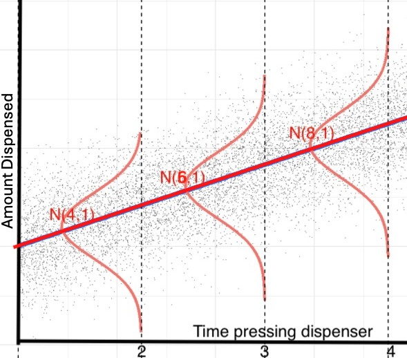
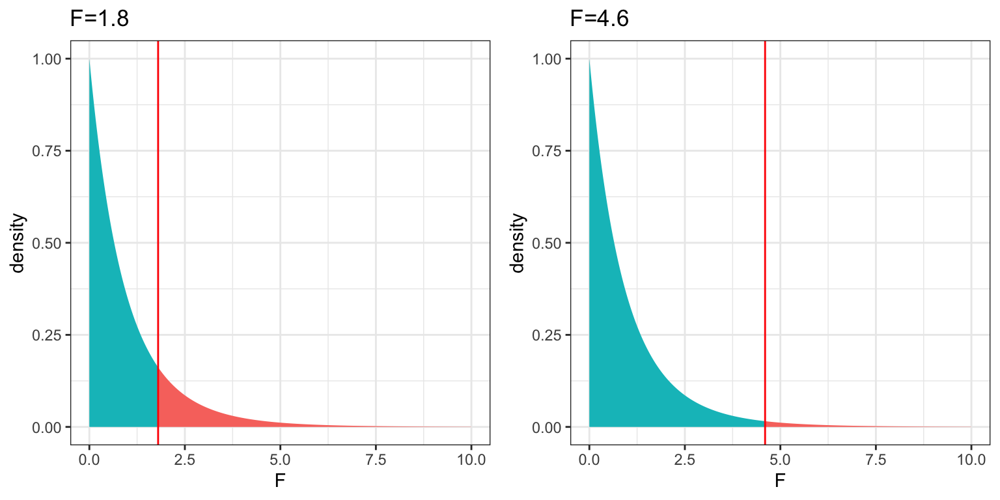
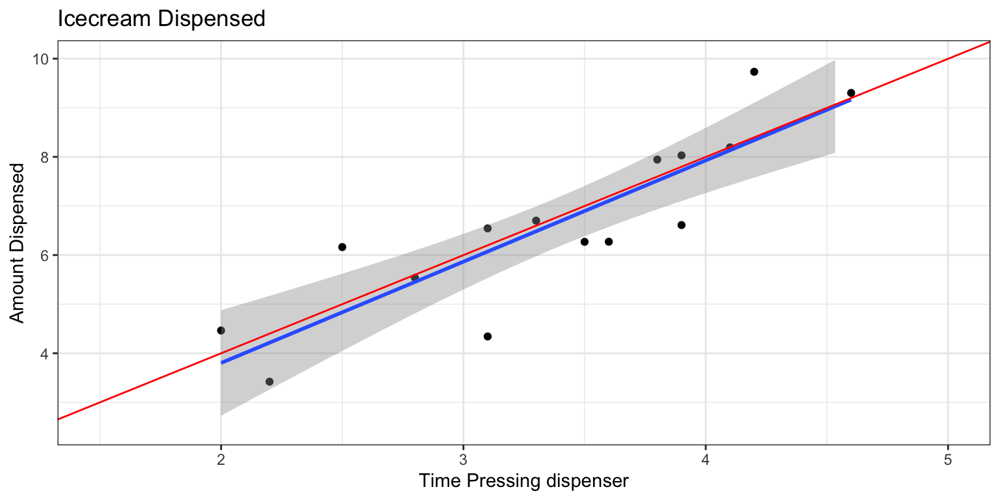
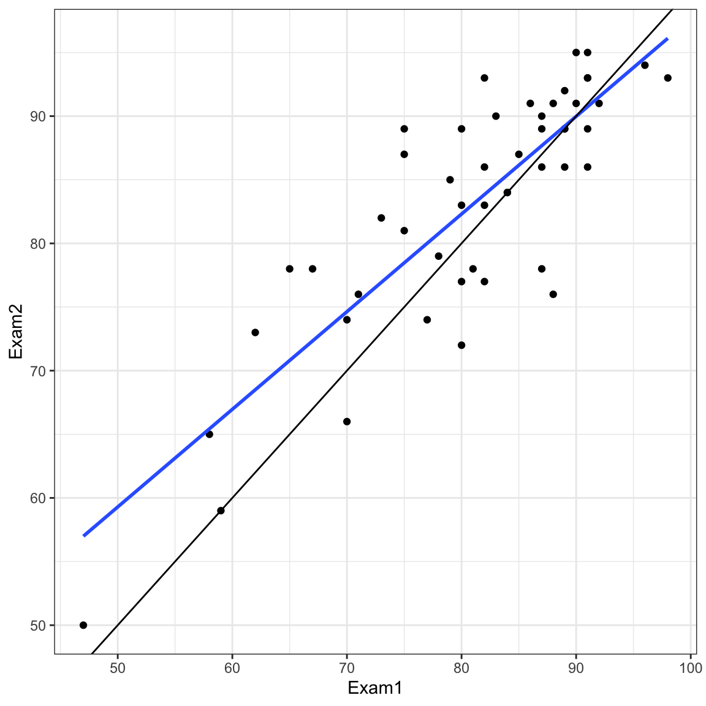
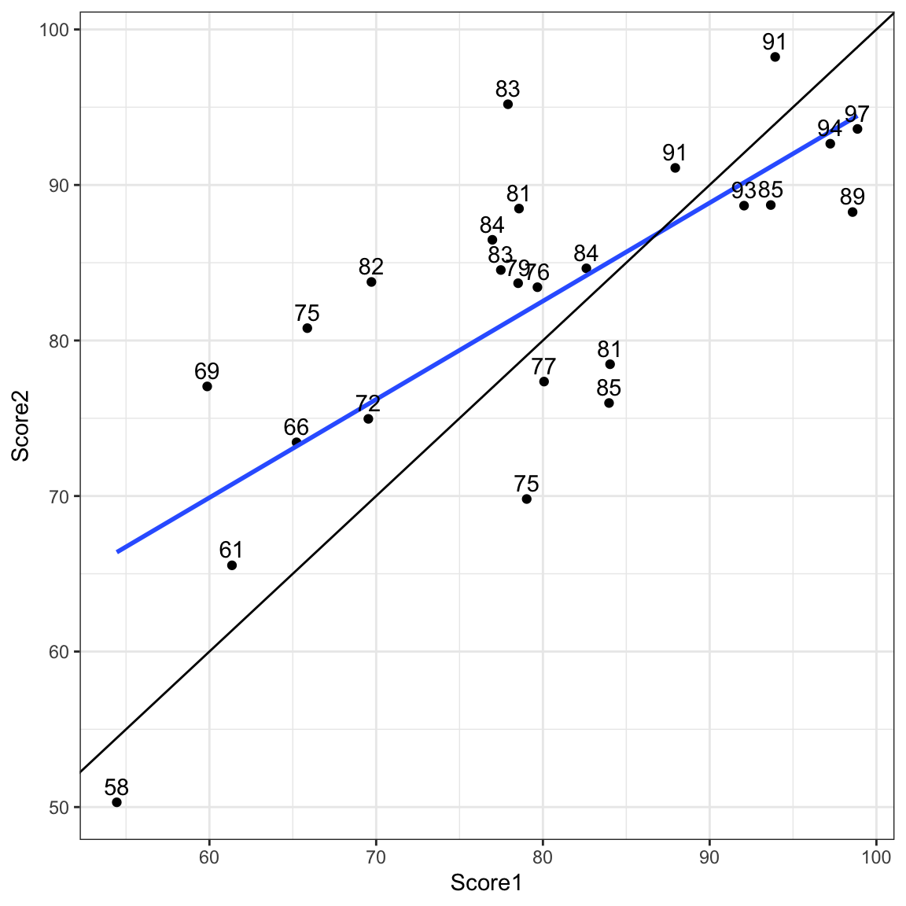
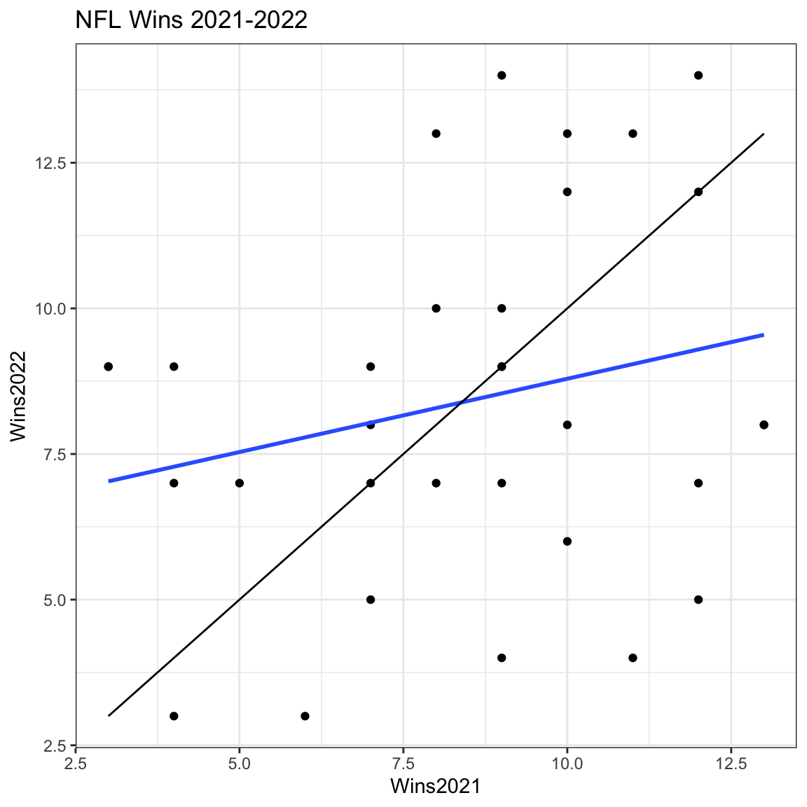

4 Inference from Models
Learning Outcomes
Conceptual Learning Outcomes
16. State the assumptions of the ordinary regression model in context.
17. State the hypotheses associated with each p-value in the lm summary table and explain what we should conclude from each test.
18. Interpret quantities in the R lm summary output including standard errors, residual standard error, \(R^2\), and the F-statistic.
19. Use standard error formulas to calculate quantities in R model summary output (including estimates, standard errors, t-statistics, \(R^2\), and F-statistics), as well as output for associated tests and confidence intervals.
20. Distinguish between confidence intervals for model parameters, confidence for expected response, and prediction intervals, and identify the sources of variability contributing to each.
21. Explain the regression effect in context.
22. Identify situations where multiple testing error is a concern and explain how to correct for such errors.
23. Identify situations where a statistically discernible result might not be practically important, or when a large p-value might still be meaningful.
Computational Learning Outcomes
H. Perform hypothesis tests and calculate confidence and prediction intervals based on models using R.
4.1 Ordinary Linear Regression Model
You’ve probably noticed that most of the sampling distributions for statistics we’ve seen were symmetric and bell-shaped in nature. When working with statistics that have symmetric and bell-shaped distributions it is often possible to use well-known probability facts to obtain confidence intervals and perform hypothesis tests without actually performing simulation.
In this chapter, we’ll examine a set of assumptions that, if true, would ensure that statistics like means and differences in means, and regression coefficients follow symmetric and bell-shaped distributions. We’ll learn how to use facts from probability to calculate confidence intervals and p-values without actually performing simulation in these instances.
4.1.1 Signal and Noise
Suppose an ice cream machine is manufactured to dispense 2 oz. of ice cream per second, on average. If 15 people used the ice cream machine, holding the dispenser for different amounts of time, and each person got exactly 2 oz. per second, the relationship between time holding the dispenser and amount dispensed would look like this:
In reality, however, the actual amount dispensed each time it is used will vary due to unknown factors like:
- force applied to dispenser
- temperature
- build-up of ice cream
- other unknown factors
Thus, if 15 real people held the dispenser and recorded the amount of ice cream they got, the scatter plot we would see would look something like this:

We can think of the amount of ice cream a person receives as being a result of two separate components, often referred to as signal and noise. In the graphic the red line represents the signal, and the amount by which each point deviates from the line is the noise.
Signal represents the average amount of ice cream a person is expected to receive based on the amount of time holding the dispenser. In this case, signal is given by the function \(\text{Expected Amount} = 2\times\text{Time}\). Everyone who holds the dispenser for \(t\) seconds is expected to receive \(2t\) ounces of ice cream.
Noise represents how much each person’s actual amount of ice cream deviates from their expected amount. For example, a person who holds the dispenser for 1.5 seconds and receives 3.58 oz. of ice cream will have received 0.58 ounces more than expected due to noise (i.e. factors other than the amount of time holding the dispenser).
In a statistical model, we assume that in the data we observe, the value of the response variable is the sum of the signal and noise. The signal is a function of the explanatory variables in the model and noise is a deviation from the signal due to factors beyond those accounted for in the model.
4.1.2 Normal Distribution
In the ice cream example it might be reasonable to expect that most people will get close to the amount of ice cream they should expect to get, based on the amount of time they hold down the dispenser, while a few people might get a lot more or less. When modeling noise, it is common to model noise using a symmetric, bell-shaped distribution, known as a normal distribution.
We can think of the noise associated with each person’s amount of ice cream as if it came from randomly picking a point somewhere under the bell curve. Since most of the area under the curve is close to the middle, most people’s deviation or noise, will be small, so they expect to get approximately the amount of ice cream they would expect, based on the amount of time they held down the dispenser. There is, however, some area in the tails of the bell curve, indicating that occasionally, a person will get much more or much less ice cream than expected.
Spread in a Normal Distribution
A normal distribution is denoted \(\mathcal{N}(\mu, \sigma)\).
- \(\mu\) represents the mean, or center, of the distribution. When modeling noise, we typically assume \(\mu=0\).
- \(\sigma\) represents the standard deviation in the normal distribution. More noise corresponds to higher values of \(\sigma\).
In the ice cream example, \(\sigma\) can be thought of as the standard deviation in amount of ice cream dispensed among people who hold the dispenser for the same amount of time.
The normal distribution seen previously is shown again below (Dist. A), along with two others. The graph shows how the amount of noise can vary between normal distributions. If our ice cream was very consistent and had little noise, it would behave more like Distribution B, with noise most often being close to 0. If there is a lot of variability between ice cream dispensed, even for people holding the dispenser for the same amount of time, it would behave more like Distribution C with more area in the tails resulting in a higher probability of unusually high or low ice cream amounts.
Here, we’ll assume that the noise associated with our ice cream machine can be characterized by a normal distribution with mean \(\mu=0\) and standard deviation \(\sigma=1\).
Note that the square of the standard deviation \(\sigma^2\) is called the variance. Some books denote the normal distribution as \(\mathcal{N}(\mu, \sigma^2)\), instead of \(\mathcal{N}(\mu,\sigma)\). We will use the \(\mathcal{N}(\mu,\sigma)\) here, which is consistent with R.
Simulating the Ice Cream Dispenser
The amount of ice cream a person gets is thus determined by both the amount of time they hold the dispenser and by noise, representing factors other than time. The illustration below shows the amount of ice cream people might get as a function of time holding the dispenser. The grey dots represent ice cream amounts for individual people. Notice that people who hold the dispenser for 2 seconds get 4 oz. of ice cream, on average, but some come out higher or lower due to noise.

We’ll simulate the amount of ice cream dispensed for 15 people. We’ll assume the noise associated with each person’s ice cream amount is normally distributed, as in the above illustration. So, we’ll simulate the amount of ice cream they get by adding a random number from the normal distribution shown to each person’s expected amount.
The rnorm command below generates random numbers from a normal distribution. Here we tell it to generate 15 numbers from a normal distribution with with mean of 0, and standard deviation of 1, which is consistent with the illustrations we’ve seen.
The table shows the time each person pressed the dispenser, the signal (the amount they would be expected to receive based on time holding the dispenser), the noise, and the amount they actually receive.
set.seed(10082020)
# set times
time <- c(2, 2.2, 2.5, 2.8, 3.1, 3.1, 3.3, 3.5, 3.6, 3.8, 3.9, 3.9, 4.1, 4.2, 4.6)
expected <- 2*time # expected amount
noise <-rnorm(15, 0, 1) %>% round(2) #generate noise from normal distribution
amount <- 2*time + noise # calculate observed amounts
Icecream <- data.frame(time, signal, noise, amount) # set up data table
kable((Icecream)) #display table| time | signal | noise | amount |
|---|---|---|---|
| 2.0 | 4.0 | 0.46 | 4.46 |
| 2.2 | 4.4 | -0.98 | 3.42 |
| 2.5 | 5.0 | 1.16 | 6.16 |
| 2.8 | 5.6 | -0.06 | 5.54 |
| 3.1 | 6.2 | 0.34 | 6.54 |
| 3.1 | 6.2 | -1.86 | 4.34 |
| 3.3 | 6.6 | 0.10 | 6.70 |
| 3.5 | 7.0 | -0.73 | 6.27 |
| 3.6 | 7.2 | -0.93 | 6.27 |
| 3.8 | 7.6 | 0.34 | 7.94 |
| 3.9 | 7.8 | -1.19 | 6.61 |
| 3.9 | 7.8 | 0.23 | 8.03 |
| 4.1 | 8.2 | -0.01 | 8.19 |
| 4.2 | 8.4 | 1.33 | 9.73 |
| 4.6 | 9.2 | 0.10 | 9.30 |
The scatterplot displays the amount dispensed compared to the time pressing the dispenser. The red line indicates the line \(y=2x\). If there was no random noise, then each person’s amount dispensed would lie exactly on this line.
ggplot(data=Icecream1, aes(x=time, y=amount)) + geom_point() + ggtitle("Icecream Dispensed") + xlab("Time Pressing dispenser") + ylab("Amount Dispensed") + geom_abline(slope=2, intercept=0, color="red") + xlim(c(1.5,5)) + ylim(c(2.5,10)) +
annotate("text", label="y=2x", x= 3.5, y=6.5, size=10, color="red") + theme_bw()
Mathematically, we write the amount of ice cream the \(i-\)th person gets as the sum of a linear function of time holding the dispenser (the signal), and a normal random variable \(\epsilon_i\) (the noise).
\[ \text{Amount}_i = \beta_0 + \beta_1\times\text{Time}_i+\epsilon_i, \text{ where } \epsilon_i\sim\mathcal{N}(0, \sigma) \]
In this instance, we know that a person who does not press the dispenser at all will, of course, get no ice cream, and a person who holds the dispenser for two seconds is supposed to get 2 ounces of ice cream for each second they hold the dispenser. Thus, we know so \(\beta_0=0\) and \(\beta_1=2\). We also know that \(\sigma\), the standard deviation in amounts between people holding the dispenser for the same amount of time, is \(\sigma=1\). Thus, the true equation of the regression line is:
\[ \text{Amount}_i = 0 + 2\times\text{Time}_i+\epsilon_i, \text{ where } \epsilon_i\sim\mathcal{N}(0, 1) \]
4.1.3 Estimating Signal
In a real situation, we would not see the signal and noise columns in the table or the red line on the graph. We would only know the time and amount, and points on the scatter plot. From these, we would need to estimate the location of the red line by fitting a least squares regression line to the data, as we’ve done before.
We can estimate the slope and intercept of the red line, \(\beta_0\) and \(\beta_1\) by fitting a regression line to the observed data. The blue line represents the regression line fit to the data from the 15 people in our simulation. Notice that it is close, but not identical to the red line.
ggplot(data=Icecream1, aes(x=time, y=amount)) + geom_point() + ggtitle("Icecream Dispensed") + xlab("Time Pressing dispenser") + ylab("Amount Dispensed") + stat_smooth(method="lm", se=FALSE) + geom_abline(slope=2, intercept=0, color="red") + xlim(c(1.5,5)) + ylim(c(2.5,10)) + theme_bw()We fit the model to the simulated data.
IC_Model <- lm(data=Icecream1, lm(amount~time))
IC_Model
Call:
lm(formula = lm(amount ~ time), data = Icecream1)
Coefficients:
(Intercept) time
-0.3223 2.0625 The intercept and slope are \(b_0=\) -0.32 and 2.06.
The estimated regression equation is
\[ \begin{aligned} \text{Amount}_i & = b_0 + b_1\text{Time}_i + \epsilon_i \\ & = -0.32 + 2.06\text{Time}_i + \epsilon_i \end{aligned} \]
The estimates \(b_0\) and \(b_1\) are close, but not identical to the the true values of \(\beta_0\) and \(\beta_1\), which in this case, we know are \(\beta_0=0\) and \(\beta_1=2\). Typically, the values of \(b_0\) and \(b_1\) calculated from a sample will deviate from the true values \(\beta_0\) and \(\beta_1\) due to noise in the observed data.
It is common for people to be confused about the difference between \(\beta_0\) and \(\beta_1\) and \(b_0\) and \(b_1\). To reemphasize the distinction, the Greek letters \(\beta_0\) and \(\beta_1\) are parameters about the true mechanism or process, which we typically don’t know. The English letters \(b_0\) and \(b_1\) are statistics calculated from the sample of data we have. These will vary from sample to sample. As we did in Chapter 3, we’ll use \(b_0\) and \(b_1\) to estimate and draw inferences about \(\beta_0\) and \(\beta_1\).
4.1.4 Estimating Noise
An estimate for \(\sigma\), the amount of variability in amount of ice cream dispensed between people who hold the dispenser for the same amount of time (i.e. the amount of noise) can be estimated as a function of SSR, sample size (n), and number of parameters terms in the model (p), excluding the intercept.
\(s =\sqrt{\frac{\text{SSR}}{n-(p+1)}} = \sqrt{\frac{\displaystyle\sum_{i=1}^n(y_i-\hat{y}_i)^2}{(n-(p+1))}}\).
This quantity \(s\) is called the residual standard error.
Keeping with the convention of using Greek letters to represent population parameters \(\sigma\) and English letters to represent estimates calculated from samples, we use \(s\) to represent the estimate of \(\sigma\) that we calculate from our sample.
In this case, \(n=15\), and \(p=1\) so we can calculate \(s\) as below.
s <- sqrt(sum(IC_Model$residuals^2)/(15-(1+1)))
s[1] 0.905437We notice that \(s\) is a reasonable estimate of \(\sigma\), which we know to be 1. In most situations, we won’t know the true value of \(\sigma\) and will use \(s\) as an estimate.
4.1.5 Ordinary Linear Regression Model
In the ice cream example, the relationship between expected amount and time holding the dispenser was given by a linear equation involving a single numeric explanatory variable. We can generalize this to situations with multiple explanatory variables, which might be numeric or categorical.
Individual observations are then assumed to vary from their expectation in accordance with a normal distribution, representing random noise (or error).
The mathematical form of a linear regression model is
\(Y_i = \beta_0 + \beta_1X_{i1}+ \ldots + \beta_pX_{ip} + \epsilon_i\), with \(\epsilon_i\sim\mathcal{N}(0,\sigma)\).
Note that in place of \(X_{ip}\), we could have indicators for categories, or functions of \(X_{ip}\), such as \(X_{ip}^2\), \(\text{log}(X_{ip})\), or \(\text{sin}(X_{ip})\).
The quantities \(\beta_0, \beta_1, \ldots, \beta_p\) are parameters, pertaining to the true but unknown data generating mechanism.
The estimates \(b_0, b_1, \ldots, b_p\), are statistics, calculated from our observed data.
We use statistics \(b_0, b_1, \ldots, b_p\) to obtain confidence intervals and hypothesis tests to make statements about parameters \(\beta_0, \beta_1, \ldots, \beta_p\).
4.1.6 Model Assumptions
The linear regression model depends on four assumptions, which we made when simulating the behavior of the ice cream dispenser.
Linearity - The expected value of the response variable \(Y\) is a linear function of the explanatory variable(s).
Ex. the expected amount of ice cream dispensed (i.e the signal) is a linear function of time the dispenser was pressed.Constant Variance - the variance between individual values of the response variable is the same for any values/categories of the explanatory variable(s)
Ex. individual amounts dispensed varied from their expected amount with equal variability, regardless of the amount of time. That is, the amount of variability in individual amounts dispensed was the same for people who held the dispenser for 1 s. as for people who held it for 2 s. or 3 s., etc.Normality - for any values/categories of the explanatory variable(s) individual response values vary from their expectation in accordance with a normal distribution.
Ex. individual amounts dispensed varied from their expected amount in accordance with a normal distribution.Independence - individual response values are not affected by one another
Ex. the amount of ice cream dispensed for one person was not affected by the amount dispensed for anyone else.
4.1.7 Statistical Abstraction
If we really believe that data come about as the ordinary regression model describes, then probability theory tells us that regression coefficients \(b_j\)’s, representing differences between categories for categorical variables and rates of change for quantitative variables, follow symmetric and bell-shaped distributions. We can use this fact to create confidence intervals and perform hypothesis tests, without needing to perform simulation. This is, in fact what R does in it’s model summary output.
These methods are only valid, however, if data can reasonably be thought of as having come from a process consistent with the assumptions of the ordinary regression model process. If we don’t believe that our observed data can be reasonably thought of as having come from such a process, then the confidence intervals and p-values produced by R, and other places that rely on probability-based methods will not be reliable.
The process of formulating a real world situation as a statistical model is known as statistical abstraction.
We close the section with a philosophical question:
Do data really come about from processes like the ordinary regression model? That is, do you think it is reasonable to believe that data we see in the real world (perhaps the amount of ice cream dispensed by an ice cream machine) represent independent outcomes of a process in which expected outcomes are a linear function of explanatory variables, and deviate from their expectation according to a normal distribution with constant variance?
We won’t attempt to answer that question here, but it is worth thinking about. After all, it is an assumption on which many frequently employed methods of statistical inference depends.
4.2 Theory-Based Inference
You probably noticed that most of the bootstrap and sampling distributions we saw in Chapter 3 were symmetric and bell-shaped in nature. When the assumptions of the ordinary regression model are reasonably satisfied, the distribution of common model estimates, including means, differences in means, and regression slopes will approximately follow symmetric, bell-shaped distributions. In such situations, we can use statistical theory to calculate confidence intervals and perform hypothesis tests, without needing to actually perform the simulations that we did in Chapter 3.
In this Section, we’ll look at the formulas and probability distributions we can use when the ordinary linear regression model is appropriate, and see how they lead to results very similar to those we’ve obtain previously via bootstrapping and permutation tests.
4.2.1 Common Standard Error Formulas
In Chapter 3, we used bootstrapping to estimate the standard error associated with statistics \(b_0\), \(b_1\), …\(b_p\) in a regression model. Depending on the model, \(b_j\) might represent an overall mean, means for different categories, or regression slopes.
It is important to realize that the standard error of a statistic \(\text{SE}(b_j)\) is not the same thing as the residual standard error \(s\) that was used to estimate \(\sigma\) in the previous section. The standard errors \(\text{SE}(b_j)\), seen in Chapter 3, are estimates of much the statistic \(b_j\) could vary between different samples of the same size as ours. On the other hand, the residual standard error \(s\) is an estimate of the standard deviation in values of the response variable among individual observations with the same value(s) or category(ies) of all explanatory variables.
These quantities are, however, related. It might not be surprising to find out that when there is more variability between individual observations, there is also more variability in statistics between samples. Thus, \(\text{SE}(b_j)\) is a function of \(s\).
Recall
\(s =\sqrt{\frac{\text{SSR}}{n-(p+1)}} = \sqrt{\frac{\displaystyle\sum_{i=1}^n(y_i-\hat{y}_i)^2}{(n-(p+1))}}\).
We can use \(s\) to calculate standard errors \(\text{SE}(b_j)\) when \(b_j\) represents a statistic like a mean, difference in means, or slope.
Theory-Based Standard Error Formulas
| Statistic | Standard Error |
|---|---|
| Single Mean | \(SE(b_0)=\frac{s}{\sqrt{n_{Group}}}\) |
| Difference in Means | \(SE(b_j)=s\sqrt{\frac{1}{n_{Groupj}}+\frac{1}{n_{Comp.Group}}}\) |
| Intercept in Simple Linear Regression | \(SE(b_0)=s\sqrt{\frac{1}{n}+\frac{\bar{x}^2}{\sum(x_i-\bar{x})^2}}\) |
| Slope in Simple Linear Regression | \(SE(b_1)=\sqrt{\frac{s^2}{\sum(x_i-\bar{x})^2}}=\sqrt{\frac{1}{n-2}\frac{{\sum(\hat{y}_i-y_i)^2}}{\sum(x_i-\bar{x})^2}}\) |
Notes:
\(n\) represents the total sample size. In Formula 1, \(n_{Group}\) represents the sample size for the group corresponding to the coefficient \(b_0\). If there are no explanatory variables in the model, it will be \(n\), otherwise, it will be the size of the baseline group. \(n_{\text{Groupj}}\) represents the sample size for the group represented by \(b_j\), and \(n_{Comp.Group}\) represents the sample size for the group it’s being compared to (i.e. the baseline group).
For the difference in means formula, the standard error estimate \(s\sqrt{\frac{1}{n_1+n_0}}\) is called a “pooled” estimate since it combines information from all groups to estimate \(s\). This is beneficial, as long as the constant variance assumption in the ordinary regression model is appropriate. When there is reason to believe standard deviation differs between groups, we can use an “unpooled” standard error estimate of \(\sqrt{\frac{s_\text{Groupj}^2}{n_\text{Groupj}}+\frac{s_{\text{CompGroup}}^2}{n_{CompGroup}}}\), where \(s_1, s_0\) represent the standard deviation for the two groups being compared. This can be used in situations where the explanatory variable is categorical and we have doubts about the constant variance assumption. By default, R assumes constant variance and uses a pooled estimate in its model summary output and related tests/intervals.
There is no theory-based formula for standard error associated with the median or standard deviation. For these, and many other statistics, we rely on simulation to estimate variability between samples.
There are formulas for standard errors associated with coefficients in multiple regression, but these require mathematics beyond what is assumed in this class. They involve linear algebra and matrix inversion, which you can read about here if you are interested.
4.2.2 Confidence Intervals
When the sampling distribution is symmetric and bell-shaped, approximate 95% confidence intervals can be calculated using the formula,
\[ \text{Statistic} \pm 2\times \text{Standard Error}, \]
where the standard error is estimated using a formula, rather than through bootstrapping.
In the next section, we’ll go through some examples to illustrate how to calculate and interpret \(s\) and \(SE(b_j)\).
We’ve now seen 3 different ways to obtain confidence intervals based on statistics calculated from data.
The table below tells us what must be true of the sampling distribution for a statistic in order to use each technique.
| Technique | No Gaps | Bell-Shaped | Known SE Formula |
|---|---|---|---|
| Bootstrap Percentile | x | ||
| Bootstrap Standard Error | x | x | |
| Theory-Based | x | x | x |
4.2.3 t-tests
A t-distribution is a symmetric, bell-shaped curve. Its shape is similar to that of the normal distribution, only it has more area in the tales, and is less concentrated around the center. When the sampling distribution for a statistic is symmetric and bell-shaped, it can be approximated by a t-distribution.
The t-distribution depends on a parameter called degrees of freedom, which determines the thickness of the distribution’s tails. The degrees of freedom is related to the sample size. As the sample size (and thus degrees of freedom) increase, the t-distributions gets closer and closer to a normal distribution with mean 0 and standard deviation 1, which is known as a standard normal distribution.
When the sampling distribution of a statistic is symmetric and bell-shaped, then the ratio
\[ t= \frac{{\text{Statistic}}}{\text{SE}(\text{Statistic})} =\frac{b_j}{\text{SE}(b_j)} \]
approximately follows a t-distribution. The statistic \(t\) is called a standardized statistic.
We can use a t-distribution to perform a hypothesis test with a null hypothesis that there is no difference between groups, or no relationship between variables. The null hypothesis is \(\beta_j=0\).
The standardized statistic tells us how many standard errors higher or lower our statistic \(b_j\) is than we would expect it to be if our null hypothesis were true.
The larger the t-statistic is, the less consistent it is with the null hypothesis. t-statistics more extreme than \(\pm 2\) typically provide evidence against the null hypothesis.
To find a p-value, we use a t-distribution to find the probability of obtaining a t-statistic as or more extreme than the one calculated from our data.
For example, for a t-distribution with 20 degrees of freedom the probability of obtaining a t-statistic as or more extreme than 1.5 is about 0.14, while the probability of obtaining a t-statistic as or more extreme than 2.8 is only 0.01.
4.2.4 F-tests
Just as the ratio of a regression statistic to its standard error follows a t-distribution, F-statistics also follow a known probability distribution when the assumptions of the ordinary linear regression model are apropriate.
An F distribution is a right-skewed distribution. It is defined by two parameters, \(\nu_1, \nu_2\), called numerator and denominator degrees of freedom.

When the assumptions of the ordinary linear regression model are reasonably satisfied, the F-statistic
\[ F = \frac{\frac{\text{SSR}_{\text{Reduced}}-\text{SSR}_{\text{Full}}}{p-q}}{\frac{\text{SSR}_{\text{Full}}}{n-(p+1)}} \]
approximately follows an F-distribution with \(p-q\) and \(n-(p+1)\) degrees of freedom.
Like with a t-statistic, we can calculate an F-statistic by looking at how extreme our F-statistic is in its F-distribution.
For an F-distribution with 2 and 20 degrees of freedom, the probability of getting an F-statistic more extreme than 1.8 is about 0.19, while the probability of getting and F-statistic as extreme or more than 4.6 is about 0.02.

4.2.5 Limitations of Theory-Based Inference
We’ve seen that in situations where the sampling distribution for a regression coefficient \(b_j\) is symmetric and bell-shaped, we can create confidence intervals and perform hypothesis tests using theory-based standard error formulas, as well as t- and F-distributions. This means we won’t need to perform permutation-based hypothesis tests, or bootstrapping for confidence intervals as we did in Chapter 3.
There are, however, limitations to this approach, which underscore the importance of the simulation-based approaches seen in Chapter 3.
These include:
There are lots of statistics, like medians and standard deviations, that do not have known standard error formulas, and do not follow symmetric bell-shaped distributions. In more advanced and complicated models, it is common to encounter statistics of interest with unknown sampling distributions. In these cases, we can estimate p-values and build confidence intervals via simulation, even if we cannot identify the distribution by name.
Even for statistics with known standard error formulas, the t-test is only appropriate when the sampling distribution for \(b_j\) is symmetric and bell-shaped. If the assumptions of the ordinary regression model are reasonably satisfied, then we can be assured that this will be the case. Sometimes, however, those assumptions will not be satisfied. There is probability theory which tells us that even when model assumptions do not hold, t-tests and and theory-based confidence intervals for regression coefficients will still be reasonable when the sample size is “large enough,” but there is no consistent definition of what “large enough.” The necessary sample size depends on the context and the degree to which assumptions are violated. Simulation-based approaches offer a more flexible method for performing inference in these situations, and also offer a way to check the results we get using theory-based methods. Furthermore, F-tests become invalid when model assumptions are violated regardless of the sample size.
The simulation-based approaches provide valuable insight to the logic behind hypothesis tests. When we permute values of an explanatory variable in a hypothesis test it is clear that we are simulating a situation where the null hypothesis is true. Likewise, when we simulate taking many samples in bootstrapping, it is clear that we are assessing the variability in a statistic across samples. Simply jumping to the t-based approximations of these distributions makes it easy to lose our sense of what they actually represent, and thus increases the likelihood of interpreting them incorrectly.
In fact, prominent statistician R.A. Fisher wrote of simulation-based methods in 1936:
“Actually, the statistician does not carry out this very simple and very tedious process, but his conclusions have no justification beyond the fact that they agree with those which could have been arrived at by this elementary method.”
Fisher’s comment emphasizes the fact that probability-based tests, like the t-test are simply approximations to what we would obtain via simulation-based approaches, which were not possible in his day, but are now.
Proponents of simulation-based inference include Tim Hesterberg, Senior Statistician at Instacart, and former Senior Statistician at Google, which heavily used simulation-based tests associated with computer experiments associated with their search settings. Hesterberg wrote a 2015 paper, arguing for the use and teaching of simulation-based techniques.
We will move forward by using probability-based inference where appropriate, while understanding that we are merely approximating what we would obtain via simulation. Meanwhile, we’ll continue to employ simulation-based approaches where probability-based techniques are inappropriate or unavailable.
4.3 Model-Based Inference
In this section, we’ll apply the theories and formulas from the previous section to the models won the Florida lakes data that we saw in Chapter 3. We’ll illustrate how to calculate all of the important peices of information provided in the model summary output produced by R.
4.3.1 Difference in Means
We’ll begin by using the ordinary regression model to predict a lake’s mercury level, using location (N vs S) as the explanatory variable.
The regression model is:
\[ \text{Mercury} = \beta_0 +\beta_1 \times\text{Location}_{\text{South}} + \epsilon_i, \text{where } \epsilon_i\sim\mathcal{N}(0, \sigma) \]
This model assumes:
Linearity - there is no linearity assumption when the explanatory variable is categorical.
Constant Variance - the variance between mercury levels of individual lakes is the same for Northern Florida, as for Southern Florida.
Normality - mercury levels are normally distributed in Northern Florida and also in Southern Florida.
Independence - mercury levels of individual lakes are not affected by those of other lakes.
A table summarizing the means and standard deviations among lakes in Northern and Southern Florida is shown below.
kable(LakesTable)| Location | MeanHg | StDevHg | N |
|---|---|---|---|
| N | 0.4245455 | 0.2696652 | 33 |
| S | 0.6965000 | 0.3838760 | 20 |
Note that the standard deviation in mercury levels is higher in Southern Florida than in Northern Florida, but the difference is not that big. As a rough guide we should be concerned about the constant variance assumption when the standard deviation in one group is more than twice as big as in another. Since that is not the case here, it seems reasonable to use the pooled standard deviation estimate as R does in its lm summary output, discussed next.
lm Summary Output
The lm summary command in R returns estimates, standard errors, test statistics, and p-values pertaining to the model. These are calculated using the formulas in Section 4.2.
M_Lakes_merc_loc <- lm(data=FloridaLakes, Mercury ~ Location)
summary(M_Lakes_merc_loc)
Call:
lm(formula = Mercury ~ Location, data = FloridaLakes)
Residuals:
Min 1Q Median 3Q Max
-0.65650 -0.23455 -0.08455 0.24350 0.67545
Coefficients:
Estimate Std. Error t value Pr(>|t|)
(Intercept) 0.42455 0.05519 7.692 0.000000000441 ***
LocationS 0.27195 0.08985 3.027 0.00387 **
---
Signif. codes: 0 '***' 0.001 '**' 0.01 '*' 0.05 '.' 0.1 ' ' 1
Residual standard error: 0.3171 on 51 degrees of freedom
Multiple R-squared: 0.1523, Adjusted R-squared: 0.1357
F-statistic: 9.162 on 1 and 51 DF, p-value: 0.003868Estimate gives the least-squares estimates \(b_0, b_1, \ldots, b_p\)
Standard Error gives estimates of the standard deviation in the sampling distribution for estimate. It tells us how the estimate is expected to vary between different samples of the given size. These are computed using the formulas in Section 4.2.1.
t value is the estimate divided by its standard error.
Pr(>|t|) is a p-value for the hypothesis test associated with the null hypothesis \(\beta_j = 0\), where \(\beta_j\) is the regression coefficient pertaining to the given line. Note that \(\beta_j\) is the unknown population parameter estimated by \(b_j\).
The Residual Standard Error is \(s =\sqrt{\frac{\text{SSR}}{n-(p+1)}} = \sqrt{\frac{\displaystyle\sum_{i=1}^n(y_i-\hat{y}_i)^2}{(n-(p+1))}}\). This is an estimate of \(\sigma\), which represents the standard deviation in the distribution of the response variable for given value(s) or category(ies) of explanatory variable(s). It tells us how much variability is expected in the response variable between different individuals with the same values/categories of the explanatory variables.
The degrees of freedom are \(n-(p+1)\).
The Multiple R-Squared value is the \(R^2\) value seen in Chapter 2. \(R^2 = \frac{\text{SST} -\text{SSR}}{\text{SST}} = \frac{\displaystyle\sum_{i=1}^n(y_i-\hat{y}_i)^2}{\displaystyle\sum_{i=1}^n(y_i-\bar{y}_i)^2}\)
We know that \(R^2\) can never decrease when additional variables are added to a model. The Adjusted-R^2 value is an alternate version of \(R^2\) that is designed to penalize adding variables that do little to explain variation in the response.
The F-statistic on the bottom line of the R-output corresponds to an F-test of the given model against a reduced model that include no explanatory variables. The p-value on this line is associated with the test of the null hypothesis that there is no relationship between the response variable and any of the explanatory variables. Since SSR for this reduced model is equal to SST, the F-statistic calculation simplifies to:
\[ F=\frac{\frac{SST - SSR}{p}}{\frac{SSR}{n-(p+1)}} \]
The degrees of freedom associated with the F-statistic are given by \(p\) and \((n-(p+1))\).
- The p-value associated with the F-statistic tells us the probability of obtaining an F-statistic as extreme or more extreme than we did if there is really no relationship between the response variable and any explanatory variables in our model.
Calculations in Summary Output
Let’s go through how all of these quantities are calculated and discuss what they tell us.
In order to do the calculations, we’ll need to know the values of SSR and SST. These are
SSR:
sum(M_Lakes_merc_loc$residuals^2)[1] 5.126873SST:
MeanMerc <- mean(FloridaLakes$Mercury)
sum((FloridaLakes$Mercury - MeanMerc)^2)[1] 6.047875We’ll start with the calculations in the bottom part, underneath the coefficients table, namely residual standard error, Multiple R-squared, and the F-statistic.
Residual Standard Error
\[ \begin{aligned} s & =\sqrt{\frac{\text{SSR}}{n-(p+1)}} \\ & = \sqrt{\frac{\displaystyle\sum_{i=1}^n(y_i-\hat{y}_i)^2}{(n-(p+1))}} \\ & =\sqrt{\frac{5.126873}{53-(1+1)}} \\ & = 0.317 \end{aligned} \]
The standard deviation in mercury concentrations among lakes in the same part of the state is estimated to be 0.317 ppm.
Multiple R-Squared
\[ R^2 = \frac{6.047875 - 5.126873}{6.047875} = 0.1523 \]
F-Statistic
\[ F=\frac{\frac{SST - SSR}{p}}{\frac{SSR}{n-(p+1)}} = \frac{\frac{6.047875 - 5.126873}{1}}{\frac{5.126873}{53-(1+1)}} = 9.162 \]
This F-statistic is associated with 1 and 51 degrees of freedom.
p-value for F-Statistic
gf_dist("f", df1=1, df2=51, geom = "area", fill = ~ (x < 9.162), show.legend=FALSE) + geom_vline(xintercept=9.162, color="red") + xlab("F") + theme_bw() + xlim(c(0,10)) We can use the pf() command to calculate the p-value. Note that pf() this command returns the probability of obtaining an F-statistic less extreme than we did, so we subtract it from 1 to get the probability of obtaining an F-statistic more extreme than we did.
1 - pf(9.162, df1=1, df2=51)[1] 0.003867677The large F-statistic and small p-value provide strong evidence against the null hypothesis that there is no relationship between a lake’s location and mercury level. We have strong evidence that there is a relationship between location and mercury level, or in other words, that mean mercury level differs between lakes in Northern and Southern Florida.
We’ll now move into the calculations in the coefficients table.
Estimates
The estimates column returns the estimates of \(b_0\) and \(b_1\). The estimated regression equation is
\[ \widehat{\text{Mercury}} = 0.4245455 + 0.2719545\times\text{Location}_{\text{South}} \]
Standard Errors
The second column in the coefficients table gives standard errors associated with \(b_0\) and \(b_1\). These tell us how much these statistics are expected to vary between samples of the given size.
Estimating \(\text{SE}(b_0)\) and \(\text{SE}(b_1)\)
We’ll use the theory-based formulas to calculate the standard errors for \(b_0\) and \(b_1\).
In this case, \(b_0\) represents a single mean, the mean mercury level for lakes in Northern Florida. Since there are 33 such lakes, the calculation is:
\(SE(b_0)=\frac{s}{\sqrt{n_\text{North}}} = \frac{0.317}{\sqrt{33}} \approx 0.055\)
The standard error of intercept \(b_0\) is 0.055. This represents the variability in average mercury level in different samples of 33 lakes from Northern Florida.
\(SE(b_1)=s\sqrt{\frac{1}{n_{\text{South}}}+\frac{1}{n_{\text{North}}}} = 0.317\sqrt{\frac{1}{20}+\frac{1}{33}} = 0.0898\)
The standard error of slope \(b_1\) is 0.0898. This represents the variability in average difference in mercury levels between samples of 33 lakes from Northern Florida and 20 lakes from Southern Florida.
These numbers match the values in the Std. Error column of the coefficients table of the lm summary output.
Confidence Intervals
We can use these standard errors to calculate 95% confidence intervals for \(\beta_0\) and \(\beta_1\).
A 95% confidence interval for \(\beta_0\) is given by
\[ \begin{aligned} & b_0 \pm 2\times\text{SE}(b_0) \\ & = 0.42455 \pm 2\times{0.055} \\ & = (0.314, 0.535) \end{aligned} \]
We are 95% confident that the mean mercury level among all lakes in Northern Florida is between 0.314 and 0.535 ppm.
A 95% confidence interval for \(\beta_1\) is given by
\[ \begin{aligned} & b_1 \pm 2\times\text{SE}(b_1) \\ & = 0.272 \pm 2\times{0.0898} \\ & = (0.09, 0.45) \end{aligned} \]
We are 95% confident that the average mercury level in Southern Lakes is between 0.09 ppm and 0.45 ppm higher than in Northern Florida.
These intervals can be obtained directly in R using the confint command.
confint(M_Lakes_merc_loc, level=0.95) 2.5 % 97.5 %
(Intercept) 0.31374083 0.5353501
LocationS 0.09157768 0.4523314Hypotheses
Before interpreting t-values and p-values in the coefficients table, we should state the hypotheses associated with them.
Hypothesis Test for line (intercept)
Null Hypothesis: The average mercury level among all lakes in North Florida is 0 (\(\beta_0=0\)).
Alternative Hypothesis: The average mercury level among all lakes in Northern Florida is not 0 (\(\beta_0\neq 0\)).
We already know the average mercury level among all lakes in North Florida is not 0, so this is a silly test. Not every test reported in the R output is a meaningful one, so we should not attempt to draw conclusions from this p-value.
Hypothesis Test for line LocationS
Null Hypothesis: There is no difference in average mercury levels between Northern and Southern Florida (\(\beta_1=0\)).
Alternative Hypothesis: There is a difference in average mercury levels in Northern and Southern Florida (\(\beta_1\neq 0\)).
t-value
We calculate standardized t-statistics associated with \(b_0\) and \(b_1\).
t-statistic for \(b_0\):
\(t=\frac{{b_0}}{\text{SE}(b_0)} = \frac{0.42455}{0.05519} = 7.692\)
In our sample, the average mercury level among lakes in Northern Florida is 7.7 standard errors higher than we would expect it to be if the average mercury level among all lakes in Northern Florida is 0. Since we know that the mean mercury level among all lakes in Northern Florida is not 0, this is not a meaningful interpretation.
t-statistic for \(b_1\):
\(t=\frac{{b_1}}{\text{SE}(b_1)} = \frac{0.27195}{0.08985} = 3.027\)
In our sample, the average mercury level among lakes in Southern Florida is 3 standard errors higher than we would expect it to be if the there was really no difference in average mercury levels between lakes in Northern and Southern Florida. Equivalently, we could say that the mean mercury level among lakes in Southern Florida is 3 standard errors higher than in Northern Florida.
Pr(>|t|)
p-value for line (Intercept)
We already know the average mercury level among all lakes in North Florida is not 0, so this is a silly test. Not every test reported in the R output is a meaningful one, so we should not attempt to draw conclusions from this p-value.
p-value for line LocationS
We plot the t-statistic of 3.027 that we observed in our data and observe where it lies on a t-distribution.
ts=3.027
gf_dist("t", df=51, geom = "area", fill = ~ (abs(x)< abs(ts)), show.legend=FALSE) + geom_vline(xintercept=c(ts, -ts), color="red") + xlab("t") + theme_bw()
We use the pt command to calculate the probability of getting a t-statistic as extreme or more extreme than the 3.027 we saw in our data. We multiply by 2 to get the area on both the left and right extremes.
2*pt(3.027, df=51, lower.tail = FALSE)[1] 0.003866374The low p-value gives us strong evidence of a difference in average mercury levels between lakes in Northern and Southern Florida.
Note that the p-value from the t-test is the same as for the F-statistic. This will happen when there is only one variable in the model.
Comparison to Simulation
Let’s compare the confidence intervals and p-values we got to the ones we obtained in Chapter 3 using bootstrapping and a permutation test.
Formula-Based 95% Confidence Interval for \(b_1\)
confint(M_Lakes_merc_loc, parm = c("LocationS"), level=0.95) 2.5 % 97.5 %
LocationS 0.09157768 0.4523314Bootstrap 95% Confidence Interval for \(b_1\):
confint(M_Lakes_merc_loc_Bootstrap, parm = c("LocationS"),
level = 0.95, method = "se") name lower upper level method estimate margin.of.error
1 LocationS 0.08256301 0.4586334 0.95 stderr 0.2719545 0.1880352p-value from t-distribution
ts=3.027
gf_dist("t", df=51, geom = "area", fill = ~ (abs(x)< abs(ts)), show.legend=FALSE) + geom_vline(xintercept=c(ts, -ts), color="red") + xlab("t") + theme_bw()2*pt(3.027, df=51, lower.tail = FALSE)[1] 0.003866374Permutation - based p-value
Estimate <- 0.272
Extreme <- abs(Lakes_merc_loc_perm_test$LocationS) > 0.272
Lakes_merc_loc_perm_test_plot <- ggplot(data=Lakes_merc_loc_perm_test, aes(x=LocationS)) +
geom_histogram(aes(fill = Extreme), color="white") +
scale_fill_manual(values = c("FALSE" = "blue", "TRUE" = "red")) +
geom_vline(xintercept=c(Estimate, -1*Estimate), color="red") +
xlab("Lakes: Simulated Value of b1") + ylab("Frequency") +
ggtitle("Distribution of b1 under assumption of no relationship") +
theme(legend.position = "none") + theme_bw()
Lakes_merc_loc_perm_test_plotprop(~ (abs(LocationS) > 0.272), data = Lakes_merc_loc_perm_test)prop_TRUE
0.003 The formula-based confidence interval and p-value are very close to those produced by simulation. Both approximations, so they are not expected to be identical, but should be close. They lead us to the same conclusion, namely that there is a difference in mean mercury level between lakes in Northern and Southern Florida and that the difference is somewhere between about 0.10 and 0.45 ppm.
4.3.2 Regression Slope and Intercept
We’ll use the ordinary regression model to predict a lake’s mercury level, using pH as the explanatory variable. In this case, the explanatory variable is quantitative, so \(\beta_1\) represents a slope.
The regression model is:
\[ \text{Mercury} = \beta_0 +\beta_1 \times\text{pH} + \epsilon_i, \text{where } \epsilon_i\sim\mathcal{N}(0, \sigma) \]
This model assumes:
Linearity - the mercury level is a linear function of pH.
Constant Variance - the variance between mercury levels of individual lakes is the same for each pH level.
Normality - for each pH, mercury levels are normally distributed.
Independence - mercury levels of individual lakes are not affected by those of other lakes.
We might have doubts about some of these assumptions. For example, if we believe there might be more variability in mercury levels among lakes with higher pH levels than lower ones (a violation of the constant variance assumption), or that lakes closer together are likely to have similar mercury levels (a violation of the independence assumption) then the results of the model might not be reliable.
In Chapter 5, we’ll learn ways to check the appropriateness of these assumptions. For now, we’ll assume that the model is a reasonable enough approximation of reality and use it accordingly.
The lm summary command in R returns information pertaining to the model.
M_Lakes_merc_pH <- lm(data=FloridaLakes, Mercury ~ pH)
summary(M_Lakes_merc_pH)
Call:
lm(formula = Mercury ~ pH, data = FloridaLakes)
Residuals:
Min 1Q Median 3Q Max
-0.48895 -0.19188 -0.05774 0.09456 0.71134
Coefficients:
Estimate Std. Error t value Pr(>|t|)
(Intercept) 1.53092 0.20349 7.523 0.000000000814 ***
pH -0.15230 0.03031 -5.024 0.000006572811 ***
---
Signif. codes: 0 '***' 0.001 '**' 0.01 '*' 0.05 '.' 0.1 ' ' 1
Residual standard error: 0.2816 on 51 degrees of freedom
Multiple R-squared: 0.3311, Adjusted R-squared: 0.318
F-statistic: 25.24 on 1 and 51 DF, p-value: 0.000006573Let’s go through the calculations in the coefficients table and the rows below it. We first need to calculate SST and SSR as well as \(\bar{x}\) and \(\sum(x_i-\bar{x})^2\), where \(x\) represents the explanatory variable, \(pH\).
SST:
Mean_merc <- mean(FloridaLakes$Mercury)
sum((FloridaLakes$Mercury-Mean_merc)^2)[1] 6.047875SSR:
sum(M_Lakes_merc_pH$residuals^2)[1] 4.045513\(\bar{x}\):
mean(FloridaLakes$pH)[1] 6.590566\(\sum(x_i-\bar{x})^2\)
Mean_pH <- mean(FloridaLakes$pH)
sum((FloridaLakes$pH-Mean_pH)^2)[1] 86.325284.3.2.1 Residual Standard Error
\[ s =\sqrt{\frac{\text{SSR}}{n-(p+1)}} = \sqrt{\frac{\text{SSR}}{n-(p+1)}} = \sqrt{\frac{4.045513}{53-(1+1)}}=0.2816 \]
The degrees of freedom associated with this estimate is \(53-(1+1) = 51\).
4.3.2.2 Multiple R-Squared
\[ R^2 = \frac{6.047875 - 4.045513}{6.047875} = 0.3311 \]
4.3.2.3 F-Statistic
The F-statistic is
\[ F=\frac{\frac{SST - SSR}{p}}{\frac{SSR}{n-(p+1)}} = \frac{\frac{6.047875 - 4.045513}{1}}{\frac{4.045513}{53-(1+1)}} = 25.24 \]
This F-statistic is associated with 1 and 51 degrees of freedom.
p-value associated with F-statistic
gf_dist("f", df1=1, df2=51, geom = "area", fill = ~ (x < 9.162), show.legend=FALSE) + geom_vline(xintercept=25.24, color="red") + xlab("F") + theme_bw() + xlim(c(0,30)) 1 - pf(25.24, df1=1, df2=51) |> round(4)[1] 0Estimates
The estimates \(b_0 = 1.53\) and \(b_1=-0.15\) are calculated by fitting the regression line that minimizes the sum of the squared residuals.
Standard Errors
\[ SE(b_0)=s\sqrt{\frac{1}{n}+\frac{\bar{x}^2}{\sum(x_i-\bar{x})^2}} = 0.2816\sqrt{\frac{1}{53} + \frac{6.59^2}{86.32528} } = 0.2034 \]
\(SE(b_0)\) represents the variability in mercury levels among lakes with pH of 0 between different samples of size 53. Since we don’t have any lakes with pH of 0, this is not a meaningful calculation.
\[ SE(b_1)=\sqrt{\frac{s^2}{\sum(x_i-\bar{x})^2}}=\sqrt{\frac{0.2816^2}{86.32528}} = 0.0303 \]
\(SE(b_1)\) represents the variability in rate of change in mercury level for each additional one unit increase in pH, between different samples of size 53.
Confidence Interval
A 95% confidence interval for \(\beta_0\) is given by
\[ \begin{aligned} & b_0 \pm 2\times\text{SE}(b_0) \\ & = 1.53 \pm 2\times{0.203} \\ & = (1.12, 1.94) \end{aligned} \] This, in theory, would be telling us that we are 95% confident that the mean mercury level among all lakes in Florida with pH 0 would be between 1.12 and 1.94 ppm. Since there are no such lakes, this is not a sensible interpretation.
A 95% confidence interval for \(\beta_1\) is given by
\[ \begin{aligned} & b_1 \pm 2\times\text{SE}(b_1) \\ & = -0.15 \pm 2\times{0.03} \\ & = (-0.21, -0.09) \end{aligned} \]
We are 95% confident that for each 1-unit increase in pH, mercury level is expected to decrease between 0.09 and 0.21 ppm.
These intervals can be obtained directly in R using the confint command.
confint(M_Lakes_merc_pH, level=0.95) 2.5 % 97.5 %
(Intercept) 1.1223897 1.93944769
pH -0.2131573 -0.09144445Hypotheses
Hypothesis Test for Intercept Line
Null Hypothesis: The average mercury level among all Florida lakes with pH = 0 is 0. (\(\beta_0=0\)).
Alternative Hypothesis: The average mercury level among all Florida lakes with pH = 0 not 0. (\(\beta_0 \neq 0\)).
Since there are no lakes with pH level 0, this is not a meaningful test.
Hypothesis Test for pH Line
Null Hypothesis: There is no relationship between mercury and pH level among all Florida lakes. (\(\beta_1=0\)).
Alternative Hypothesis: There is a relationship between mercury and pH level among all Florida lakes. (\(\beta_1 \neq 0\)).
t-value
t-statistic for b_0
\(t=\frac{{b_j}}{\text{SE}(b_j)} = \frac{1.53}{2.03} = 7.72\)
In our sample, the mean mercury level in lakes with pH 0 is estimated to be 7 standard errors lower than we would expect if the mean mercury level in lakes with pH 0 was 0. This is not a meaningful interpretation since no lakes have pH 0.
t-statistic for b_1
\(t=\frac{{b_j}}{\text{SE}(b_j)} = \frac{-0.15230}{0.03031} = -5.024\)
In our sample, the estimated change in mercury for each on unit change in pH is 5 standard errors less than we would expect it to be if there were no relationship between mercury and pH.
Pr(>|t|)
p-value for line intercept
Since the null hypothesis on the intercept line is not a sensible one, we should not draw conclusions based on this p-value.
p-value for line pH
ts=5.024
gf_dist("t", df=51, geom = "area", fill = ~ (abs(x)< abs(ts)), show.legend=FALSE) + geom_vline(xintercept=c(ts, -ts), color="red") + xlab("t") + theme_bw()
2*pt(-abs(ts), df=51)[1] 0.000006578117The p-value is extremely small, providing strong evidence of a relationship between a lake’s pH and mercury content.
Comparison to Simulation
We compare this standard error estimate and confidence interval to the ones we would obtain via bootstrapping.
Formula-Based 95% Confidence Interval for \(\beta_1\):
confint(M_Lakes_merc_pH, parm=c("pH"), level=0.95) 2.5 % 97.5 %
pH -0.2131573 -0.09144445Bootstrap 95% Confidence Interval for \(\beta_1\):
M_Lakes_merc_pH_Bootstrap <- do(10000) * lm(Mercury ~ pH, data = resample(FloridaLakes))
confint(M_Lakes_merc_pH_Bootstrap, parm = c("pH"),
level = 0.95, method = "se") name lower upper level method estimate margin.of.error
1 pH -0.2049221 -0.1000458 0.95 stderr -0.1523009 0.05243817p-value from t-distribution
ts=5.024
gf_dist("t", df=51, geom = "area", fill = ~ (abs(x)< abs(ts)), show.legend=FALSE) + geom_vline(xintercept=c(ts, -ts), color="red") + xlab("t") + theme_bw()2*pt(-abs(ts), df=51)[1] 0.000006578117Permutation - based p-value
Lakes_merc_pH_perm_test_plotprop(~ (abs(pH) > 0.15), data = Lakes_merc_pH_perm_test)prop_TRUE
0 The interval and p-value produced by the theory based methods are again very similar those we obtained via simulation and lead us to the same conclusions.
4.3.3 Single Mean
Now, we’ll look at a simple model in which we seek to estimate the mean mercury level among all lakes in Florida, based on the 53 lakes in our sample.
The regression model is:
\[ \text{Mercury} = \beta_0 + \epsilon_i, \text{where } \epsilon_i\sim\mathcal{N}(0, \sigma) \]
This model assumes:
Linearity - there is no linearity assumption since there are no explanatory variables.
Constant Variance - there is no linearity assumption since there are no explanatory variables.
Normality - mercury levels among all lakes in Florida are normally distributed.
Independence - mercury levels of individual lakes are not affected by those of other lakes.
The lm summary command in R returns information pertaining to the model.
M_Lakes_merc_0 <- lm(data=FloridaLakes, Mercury ~ 1)
summary(M_Lakes_merc_0)
Call:
lm(formula = Mercury ~ 1, data = FloridaLakes)
Residuals:
Min 1Q Median 3Q Max
-0.48717 -0.25717 -0.04717 0.24283 0.80283
Coefficients:
Estimate Std. Error t value Pr(>|t|)
(Intercept) 0.52717 0.04684 11.25 0.00000000000000151 ***
---
Signif. codes: 0 '***' 0.001 '**' 0.01 '*' 0.05 '.' 0.1 ' ' 1
Residual standard error: 0.341 on 52 degrees of freedomThe model estimates that the average mercury level is 0.527, which matches the sample mean, as we know it should.
We’ll again go through the calculations in the model summary output.
We first calculate SST, which is equal to SSR for a model with no explanatory variables.
Mean_merc <- mean(FloridaLakes$Mercury)
sum((FloridaLakes$Mercury-Mean_merc)^2)[1] 6.0478754.3.3.1 Residual Standard Error
Since there are no explanatory variables in this model, p=0.
\[ s =\sqrt{\frac{\text{SSR}}{n-(p+1)}} = \sqrt{\frac{6.047875}{53-(1+0)}}=0.341\]
The degrees of freedom associated with this estimate is \(53-(1+0) = 51\).
Multiple R-Squared
Since there are no explanatory variables in the model, SSR=SST, so \(R^2=0\). Notice that \(R^2\) is not given in the model summary.
F-Statistic
Since there are no explanatory variables in the model, SSR=SST, so \(F=0\). Notice that F is not given in the model summary.
Estimates
\(b_0 = \bar{y} = 0.527\)
The mean mercury level among all lakes in Florida is 0.527 ppm.
Standard Errors
\(\text{SE}(b_0) = \frac{s}{\sqrt{n}} =\frac{0.341}{\sqrt{53}} = 0.4684\)
Confidence Intervals
A 95% confidence interval for \(\beta_0\) is
\[ \begin{aligned} & b_0 \pm 2\times\text{SE}(b_0) \\ & = 0.527 \pm 2\times{0.0468} \\ & = (0.43, 0.62) \end{aligned} \] We are 95% confident that the mean mercury level among all lakes in Florida is between 0.43 and 0.62 parts per million.
Hypotheses
The null hypothesis on the line (Intercept) is that the average mercury level among all lakes in Florida is 0. We know this isn’t true, so there is no reason to perform the hypothesis test.
t-value
\(t=\frac{b_0}{\text{SE}(b_0)} = \frac{0.527}{0.0468} = 11.25\)
The mean mercury level among the lakes in the sample is 11 standard errors higher than we would expect it to be if the mean mercury level among all lakes in the state were actually 0, but since we know that’s not the case, this is not a meaningful interpretation.
Pr(>|t|)
p-value for line (Intercept)
2*pt(-abs(11.25), df=52)[1] 0.000000000000001523657The p-value is extremely small, but it is not meaningful since the null hypothesis being tested in nonsensical.
Comparison to Simulation
Formula-based confidence interval for mean mercury level
confint(M_Lakes_merc_0) 2.5 % 97.5 %
(Intercept) 0.4331688 0.6211709Bootstrap confidence interval for mean mercury level
confint(Lakes_Bootstrap_Mean, level = 0.95, parm= c("Intercept"), method = "stderr") name lower upper level method estimate margin.of.error
1 Intercept 0.4375052 0.617128 0.95 stderr 0.5271698 0.089811424.3.4 Comparing Three Groups
Now, we’ll look at a model comparing mercury levels between deep, medium, and shallow lakes.
The table shows the mean and standard deviation in mercury and number of lakes at each depth level.
kable(Lakes_merc_cond_Tab)| Depth | Mean_Hg | SD_Hg | N |
|---|---|---|---|
| Deep | 0.604 | 0.307 | 15 |
| Medium | 0.591 | 0.429 | 16 |
| Shallow | 0.428 | 0.276 | 22 |
Note that the standard deviations within each group are pretty similar. This suggests that the constant variance model assumption appears reasonable, so the R lm summary output, which uses a pooled standard deviation estimate should be reliable.
The model equation is:
\[ \widehat{\text{Mercury}} = b_0 + b_1\times\text{DepthMedium} + b_2\times\text{DepthShallow} \]
The model summary output is shown below.
M_Lakes_merc_depth <- lm(data=FloridaLakes, Mercury~Depth)
summary(M_Lakes_merc_depth)
Call:
lm(formula = Mercury ~ Depth, data = FloridaLakes)
Residuals:
Min 1Q Median 3Q Max
-0.55125 -0.24818 -0.08818 0.23875 0.72600
Coefficients:
Estimate Std. Error t value Pr(>|t|)
(Intercept) 0.60400 0.08701 6.942 0.0000000074 ***
DepthMedium -0.01275 0.12111 -0.105 0.917
DepthShallow -0.17582 0.11284 -1.558 0.126
---
Signif. codes: 0 '***' 0.001 '**' 0.01 '*' 0.05 '.' 0.1 ' ' 1
Residual standard error: 0.337 on 50 degrees of freedom
Multiple R-squared: 0.06115, Adjusted R-squared: 0.02359
F-statistic: 1.628 on 2 and 50 DF, p-value: 0.2065SSR is
sum(M_Lakes_merc_depth$residuals^2)[1] 5.678062SST is
Mean_merc <- mean(FloridaLakes$Mercury)
sum((FloridaLakes$Mercury - Mean_merc)^2)[1] 6.047875Residual Standard Error
Since there are 2 explanatory variables in this model (DepthMedium and DepthShallow), p=2.
\[ s =\sqrt{\frac{\text{SSR}}{n-(p+1)}} = \sqrt{\frac{5.678062}{53-(1+2)}}=0.337\]
Multiple R-Squared
\(R^2 = \frac{6.047875 - 5.678062}{6.047875} =0.06115\)
6% of the total variation in mercury level is explained by depth.
F-Statistic
\[ F=\frac{\frac{SST - SSR}{p}}{\frac{SSR}{n-(p+1)}} = \frac{\frac{6.047875 - 5.678062}{2}}{\frac{5.678062}{53-(1+2)}} = 1.628 \]
p-value for F-Statistic
gf_dist("f", df1=2, df2=50, geom = "area", fill = ~ (x < 1.628), show.legend=FALSE) + geom_vline(xintercept=1.628, color="red") + xlab("F") + theme_bw() + xlim(c(0,5)) 
1 - pf(1.628, df1=2, df2=50) |> round(4)[1] 0.2066The large p-value tells us we do not have enough evidence to conclude that a model accounting for depth better explains variability in mercury level than one that does not, implying we don’t have enough evidence to conclude that average mercury level differs between shallow, medium, and deep lakes.
Estimates
\(b_0 = 0.604\) - the average mercury content in deep lakes in Florida is 0.604 ppm.
\(b_1 = 0.013\) - the average mercury content in medium lakes in Florida is 0.013 ppm less than in deep lakes.
\(b_2 = 0.18\) - the average mercury content in shallow lakes in Florida is 0.18 ppm less than in deep lakes.
Standard Errors
\(SE(b_0)=\frac{s}{\sqrt{n_\text{Deep}}} = \frac{0.604}{\sqrt{15}} \approx 0.087\)
\(SE(b_1)=s\sqrt{\frac{1}{\text{Deep}}+\frac{1}{\text{Medium}}} = 0.317\sqrt{\frac{1}{15}+\frac{1}{16}} = 0.1211\)
\(SE(b_2)=s\sqrt{\frac{1}{\text{Deep}}+\frac{1}{\text{Shallow}}} = 0.317\sqrt{\frac{1}{15}+\frac{1}{22}} = 0.1128\)
Confidence Intervals
We can use these standard errors to calculate 95% confidence intervals for \(\beta_0\) and \(\beta_1\).
A 95% confidence interval for \(\beta_0\) is given by
\[ \begin{aligned} & b_0 \pm 2\times\text{SE}(b_0) \\ & = -0.01275 \pm 2\times{0.087} \\ & = (0.43, 0.78) \end{aligned} \]
We are 95% confident that the mean mercury level among all deep lakes in Florida is between 0.43 and 0.78 ppm.
A 95% confidence interval for \(\beta_1\) is given by
\[ \begin{aligned} & b_1 \pm 2\times\text{SE}(b_1) \\ & = -0.01275 \pm 2\times{0.1211} \\ & = (-0.26, 0.23) \end{aligned} \]
We are 95% confident that the average mercury level in lakes of medium depth is between 0.26 ppm lower and 0.23 ppm higher than in deep lakes.
A 95% confidence interval for \(\beta_2\) is given by
\[ \begin{aligned} & b_1 \pm 2\times\text{SE}(b_1) \\ & = -0.17582 \pm 2\times{0.1128} \\ & = (0.09, 0.45) \end{aligned} \]
We are 95% confident that the average mercury level in shallow lakes is between 0.40 ppm lower and 0.05 ppm higher than in deep lakes.
We confirm these intervals using the confint command.
confint(M_Lakes_merc_depth, level=0.95) 2.5 % 97.5 %
(Intercept) 0.4292352 0.77876484
DepthMedium -0.2560124 0.23051236
DepthShallow -0.4024618 0.05082548Hypotheses
Hypothesis Test for line (intercept)
Null Hypothesis: The average mercury level among all deep lakes in Florida is 0 (\(\beta_0=0\)).
Alternative Hypothesis: The average mercury level among all deep lakes in Florida is not 0 (\(\beta_0\neq 0\)).
We know the average mercury level is not 0, so there is no reason to do this hypothesis test.
Hypothesis Test for line DepthMedium
Null Hypothesis: There is no difference in average mercury levels between deep and medium lakes in Florida (\(\beta_1=0\)).
Alternative Hypothesis: There is a difference in average mercury levels between deep and medium lakes in Florida (\(\beta_1\neq 0\)).
Hypothesis Test for line DepthShallow
Null Hypothesis: There is no difference in average mercury levels between shallow and deep lakes in Florida (\(\beta_2=0\)).
Alternative Hypothesis: There is a difference in average mercury levels between shallow and deep lakes in Florida (\(\beta_2\neq 0\)).
t-value
t-statistic for \(b_0\):
\(t=\frac{{b_0}}{\text{SE}(b_0)} = \frac{0.60400}{0.08701} = 6.942\)
In our sample, the average mercury level among deep lakes in Florida is 6.9 standard errors higher than we would expect it to be if the average mercury level among all deep lakes in Florida is 0. Since we know that the mean mercury level among all deep lakes in Florida is not 0, this is not a meaningful interpretation.
t-statistic for \(b_1\):
\(t=\frac{{b_1}}{\text{SE}(b_1)} = \frac{-0.01275}{0.12111} = -0.105\)
In our sample, the average mercury level among all medium lakes in Florida is 0.1 standard errors lower than we would expect it to be if the there was really no difference in average mercury levels between deep and medium lakes in Florida. Equivalently, we could say that the mean mercury level among lakes in medium depth lakes is 0.1 standard errors lower than in deep lakes.
t-statistic for \(b_2\):
\(t=\frac{{b_2}}{\text{SE}(b_2)} = \frac{-0.17582}{0.11284} = -1.558\)
In our sample, the average mercury level among all shallow lakes in Florida is 1.56 standard errors lower than we would expect it to be if the there was really no difference in average mercury levels between deep and shallow lakes in Florida. Equivalently, we could say that the mean mercury level among lakes in shallow depth lakes is 1.56 standard errors lower than in deep lakes.
Pr(>|t|)
p-value for line (Intercept)
We already know the average mercury level among all deep lakes in Florida is not 0, so this is a silly test and we won’t elaborate on it.
p-value for line DepthMedium
ts=-0.105
gf_dist("t", df=50, geom = "area", fill = ~ (abs(x)< abs(ts)), show.legend=FALSE) + geom_vline(xintercept=c(ts, -ts), color="red") + xlab("t") + theme_bw()2*pt(0.105, df=50, lower.tail = FALSE)[1] 0.9167959The p-value is very large, indicating we have no evidence of differences between in average mercury level between deep and medium lakes.
p-value for line DepthShallow
ts=1.558
gf_dist("t", df=50, geom = "area", fill = ~ (abs(x)< abs(ts)), show.legend=FALSE) + geom_vline(xintercept=c(ts, -ts), color="red") + xlab("t") + theme_bw()2*pt(1.558, df=50, lower.tail = FALSE)[1] 0.125541The p-value is too big to conclude that there is evidence of differences in mean mercury level between deep and shallow lakes.
We did observe an average difference of about 0.18 ppm, which could potentially be meaningful, but given the size in our sample and amount of variability in the data, we cannot rule out the possibility that this difference was just a result of which lakes got randomly selected for the study.
Pairwise Comparisons
The model summary output allows us to compare mercury levels in medium and deep lakes to shallow ones, but it does not directly compare shallow and medium lakes. The pairs function in the emmeans command performs t-tests for all pairs of a categorical variable.
library(emmeans)
M_Lakes_merc_depth <- lm(data=FloridaLakes, Mercury~Depth)
GroupMeans <- emmeans(M_Lakes_merc_depth, ~ Depth)
pairs(GroupMeans, adjust = "none") contrast estimate SE df t.ratio p.value
Deep - Medium 0.0127 0.121 50 0.105 0.9166
Deep - Shallow 0.1758 0.113 50 1.558 0.1255
Medium - Shallow 0.1631 0.111 50 1.473 0.1471We see that the t-ratios and p-values for the first two lines match those in the lm output, and we also get a comparison for medium and shallow lakes.
Multiple Testing Error
In the previous table, we compared three groups simultaneously. Running multiple hypothesis tests at the same time increases the risk of a false positive - that is, detecting a difference when there actually isn’t one.
If we only ran one test and rejected the null hypothesis if the p-value is less than 0.05, then we would only have a 0.05 chance of rejecting the null hypothesis when it is actually true. If we run three tests though, and reject the null hypothesis for any test with a p-value less than 0.05, we will have a \(1 - 0.95^3 = 0.14\) probability of rejecting a null hypothesis that is actually true. This problem gets worse the more tests we run, making it a big problem in areas like genomics, where hundreds of thousands of tests (or more) are run simultaneously.
One popular strategy for avoiding false positives when performing multiple tests is to simply multiple each p-value by the number of tests being run. This approach is called the Bonferroni Correction. In this case, since we are running three tests, instead of rejecting a null hypothesis when the p-value for the individual test is less than 0.05, we would need it to be less than \(0.05/3 = 0.0167\). This ensures that the probability of wrongly rejecting the null hypothesis in any of our tests remains 0.05. The downside to the Bonferroni Correction is that it is a conservative method and can prevent us from detecting differences that are actually there. Other, more advanced methods, have been suggested in specific situations to try to improve on Bonferroni’s approach and controlling multiple testing error remains an active area of research in statistics and biostatistics.
In R, we can implement the Bonferroni correction using adjust="Bonferroni in the pairs command.
library(emmeans)
M_Lakes_merc_depth <- lm(data=FloridaLakes, Mercury~Depth)
GroupMeans <- emmeans(M_Lakes_merc_depth, ~ Depth)
pairs(GroupMeans, adjust = "Bonferroni") contrast estimate SE df t.ratio p.value
Deep - Medium 0.0127 0.121 50 0.105 1.0000
Deep - Shallow 0.1758 0.113 50 1.558 0.3765
Medium - Shallow 0.1631 0.111 50 1.473 0.4412
P value adjustment: bonferroni method for 3 tests Notice that the p-values are tripled. In this case, we did not have evidence of differences between shallow, medium, and deep lakes even without using the Bonferroni correction, but the evidence grows even weaker after we apply the correction.
This finding is consistent with the F-test we performed on the entire model, which did not suggest evidence of differences in mercury levels between the three different depths of lakes.
4.4 Confidence and Prediction Intervals
4.4.1 Intervals for Expected Response
In Chapter 3, we saw two different types of confidence intervals. One type was for regression parameters, \(\beta_0, \beta_1, \ldots, \beta_p\). For example, how much is a lake’s mercury level expected to change when its pH goes up by 1? The other type was for expected responses, which involved estimating linear functions of these parameters, for example \(\beta_0 + 7\beta_1\). For example, what is the expected mercury level among lakes with pH of 7?
We’ve seen how to calculate the first type of intervals using standard error formulas and the t-distribution. In this section, we’ll talk about the second kind of interval.
4.4.2 Estimation and Prediction
Think about the ice cream machine in Section 4.1. Suppose we did not know that the machine is manufactured to dispense 2 oz of ice cream per second, and had only the data on the 15 people, shown below.

Suppose we are asked the following two questions:
- Give a range for the average amount of ice cream dispensed among people who hold the dispenser for 3 seconds.
- Give a range for the amount of ice cream an individual person should expect to get if they hold the dispenser for 3 seconds.
To answer the first question, we only need to estimate the location of the red line in the diagram below. Since we would only have sample data, the regression line estimated from our sample would not exactly match the “true” regression line relating time and amount dispensed, due to sampling variability. So we would need to include a margin of error accounting for uncertainty in the location of our estimated regression line.
When answering the second question, we would need to account for variability between individual people, in addition to sampling variability. Even if we knew the exact location of the red line, we would need to account for the fact that some people would get more ice cream than expected, and others less, even if they hold the dispenser for the same amount of time. Thus, we will need to create a wider interval that is able to capture 95% of all individuals.
An interval for the expected response among all individuals with given value(s) of explanatory variable(s) is called a confidence interval.
An interval for an individual observation with given value(s) of explanatory variable(s) is called a prediction interval.
A confidence interval only needs to account for uncertainty associated with sampling variability. A prediction interval needs to account for uncertainty associated with sampling variability and variability between individuals, hence it needs to be wider than a confidence interval.
4.4.3 Calculating Confidence Intervals
An estimate for the expected among of ice cream when a person holds the dispenser for three seconds is \(b_0 + 3b_1\). In our model, we estimated \(b_0\) = -0.32 and \(b_1\) = 2.06, so the estimated amount of ice cream is \[-0.32+ 3\times2.06 = 5.87\] oz.
In order to calculate a 95% confidence interval using the standard error formula in Section 4.2, we’ll need the following quantities:
SSR:
sum((IC_Model)$residuals^2) |> round(2)[1] 10.66\(\bar{x}\)
mean(Icecream$time) |> round(2)[1] 3.37\(\displaystyle\sum(x_i-\bar{x})^2\)
sum((Icecream1$time - mean(Icecream1$time))^2) |> round(2)[1] 8.03We begin by calculating the residual standard error \(s\).
\[ s=\sqrt\frac{{SSR}}{n-(p+1)} = \sqrt{\frac{10.66}{15-(1+1)}} = 0.91 \]
A 95% confidence interval for the average amount of ice cream dispensed only needs to account for the amount of uncertainty associated with using \(b_0\) and \(b_1\), which are calculated from our sample to estimate the true, typically unknown, regression coefficients \(\beta_0\) and \(\beta_1\).
95% confidence interval for the average amount of ice cream dispensed when the dispenser is held for three seconds is
\[ \begin{aligned} & b_0 + 3 b_1 \pm 2 \times \text{SE}(b_0 + 3b_1) \\ & = b_0 + 3 b_1 \pm 2s\sqrt{\frac{1}{n}+ \frac{(x^*-\bar{x})^2}{\displaystyle\sum_{i=1}^n(x_i-\bar{x})^2}} \\ & = -0.32 + 2.06 \pm 20.91 \sqrt{\frac{1}{15}+ \frac{(3-3.37)^2}{8.03}} \\ & = (5.3322, 6.3878) \end{aligned} \]
This interval can be calculated using the predict command in R, entering the desired time in the newdata argument, and specifying interval=confidence.
predict(IC_Model, newdata=data.frame(time=3), interval = "confidence", level=0.95) fit lwr upr
1 5.865178 5.298168 6.432188We are 95% confident that the average amount of ice cream dispensed when the dispenser is held for 3 seconds is between 5.3 and 6.4 oz.
Note there are small differences in the calculation, due to rounding and technicalities. R actually uses a number slightly different than 2 in its calculation, but the results are similar and these are all approximations anyway.
The plot shows 95% the estimated regression line from our sample (in blue), along with “true” regression line in read (which we wouldn’t know in a real situation). The shaded gray area represents a 95% confidence interval for the average amount of ice cream dispensed for a given amount of time the dispenser is held.

4.4.4 Calculating Prediction Interval
When calculating an interval for the amount of ice cream an individual person receives, we need to account for variability between individual people in addition to variability associated with using \(b_0\) and \(b_1\) to estimate \(\beta_0\) and \(\beta_1\).
The residual standard error \(s\) represents variability in ice cream amount between individuals who hold the dispenser for the same amount of time. So essentially, we need to add an extra \(s\) into our calculation to account for variability between individuals.
A good first idea might be to add \(s\) to \(\text{SE}(b_0 + 3b_1)\) when calculating the margin of error needed for the prediction interval. It turns out that probability theory tells us that adding standard deviations isn’t a good idea. But instead, we can add the variances, which are the squares of the standard deviations. So, we’ll add \((\text{SE}(b_0 + 3b_1))^2+s^2\), when calculating the margin of error for the prediction interval, and then take the square root to get back to the scale of oz., rather than oz.\(^2\).
Thus, a 95% prediction interval for the amount of ice cream an individual person should expect to receive when holding the dispenser for 3 seconds is
\[ \begin{aligned} & b_0+3b_1 \pm 2\sqrt{(\text{SE}(b_0 + 3b_1))^2 + s^2} \\ & b_0 + 3b_1 \pm 2 \sqrt{s^2\left(\frac{1}{n}+ \frac{(x^*-\bar{x})^2}{\displaystyle\sum_{i=1}^n(x_i-\bar{x})^2}\right) + s^2} \\ & \\ & b_0 + 3b_1 \pm 2 s\sqrt{\left(\frac{1}{n}+ \frac{(x^*-\bar{x})^2}{\displaystyle\sum_{i=1}^n(x_i-\bar{x})^2}\right) + 1} \\ & = -0.32 + 2.06 \pm 20.91 \sqrt{\frac{1}{15}+ \frac{(3-3.37)^2}{8.03}+1} \\ & = (5.314, 7.68) \end{aligned} \]
While the calculation itself might look intimidating, the key intuition here is to note the extra \(s^2\) being added under the square root, which accounts for the variability in amount dispensed between people who hold the dispenser for the same amount of time.
To perform the calculation in R, we simply change interval="confidence" to interval="prediction" in the predict command.
predict(IC_Model, newdata=data.frame(time=3), interval = "prediction", level=0.95) fit lwr upr
1 5.865178 3.828578 7.901778We are 95% confident that in individual who holds the dispenser for 3 seconds will get between 3.83 and 7.9 oz of ice cream.
We add the red line, displaying prediction intervals for the amount of ice cream an individual person is expected to receive for a given amount of time holding the dispenser. Notice that the prediction intervals are considerably wider than the confidence intervals for the average amount, due to variability between individuals.
4.4.5 Mercury and pH in Florida Lakes
We’ll calculate a confidence interval for the average mercury content among all Florida lakes with pH of 7 and for the mercury content of an individual lake with pH of 7.
These could be done using the same formulas as above, but we’ll calculate them using the predict command in R.
First, we fit the model in R.
Lakes_M_merc_pH <- lm(data=FloridaLakes, Mercury~pH)Confidence Interval
predict(Lakes_M_merc_pH, newdata=data.frame(pH=7), interval="confidence", level=0.95) fit lwr upr
1 0.4648127 0.3832466 0.5463788We are 95% confident that the average mercury level among all Florida lakes with pH of 7 is between 0.38 and 0.55 ppm.
Prediction Interval
predict(Lakes_M_merc_pH, newdata=data.frame(pH=7), interval="prediction", level=0.95) fit lwr upr
1 0.4648127 -0.1064657 1.036091We are 95% confident that the mercury level for an individual lake in Florida with pH of 7 is between -0.11 and 1.04 ppm.
This interval is very wide, and a bit nonsensical, since mercury content can’t be negative, but we can say that we are confident such a lake will have mercury content below 1.04 ppm.
temp_var <- predict(M_Lakes_merc_pH, interval="prediction")
new_df <- cbind(FloridaLakes, temp_var)
ggplot(data=new_df, aes(x=pH, y=Mercury)) + geom_point() + labs(x="pH",
y="Amount") + stat_smooth(method=lm, se=TRUE) +
geom_line(aes(y=lwr), color = "red", linetype = "dashed") +
geom_line(aes(y=upr), color = "red", linetype = "dashed") + theme_bw() 4.4.6 Mercury in Northern and Southern Lakes
We can also calculate confidence and prediction intervals when the explanatory variable is categorical. Here we’ll calcuate confidence intervals for the mean mercury content among all lakes in Northern and Southern Florida, as well as prediction intervals for individual lakes in these regions.
M_Lakes_merc_loc <- lm(data=FloridaLakes, Mercury ~ Location)Confidence Intervals
predict(M_Lakes_merc_loc, newdata=data.frame(Location=c("N", "S")), interval="confidence", level=0.95) fit lwr upr
1 0.4245455 0.3137408 0.5353501
2 0.6965000 0.5541689 0.8388311We are 95% confident that the mean mercury level in North Florida is between 0.31 and 0.54 ppm.
We are 95% confident that the mean mercury level in South Florida is between 0.55 and 0.84 ppm.
These are confidence intervals for \(\beta_0\), and \(\beta_0 + \beta_1\), respectively.
Prediction Intervals
predict(M_Lakes_merc_loc, newdata=data.frame(Location=c("N", "S")), interval="prediction", level=0.95) fit lwr upr
1 0.4245455 -0.22155101 1.070642
2 0.6965000 0.04425685 1.348743We are 95% confident that an individual lake in North Florida will have mercury level between 0 and 1.07 ppm.
We are 95% confident that an individual lake in South Florida will have mercury level between 0.04 and 1.35 ppm.
Confidence intervals for the mean are shown in blue, and prediction intervals for individual lakes in red, for each part of the state.
temp_var <- predict(M_Lakes_merc_loc, interval="prediction")
new_df <- cbind(FloridaLakes, temp_var)
ggplot(data=new_df, aes(x=Location, y=Mercury)) + geom_jitter(width=0.2) + labs(x="Location",
y="Amount") + stat_smooth(method=lm, se=TRUE) +
geom_errorbar(aes(x="N", ymin=0, ymax=1.07), color = "red") + theme_bw() +
geom_errorbar(aes(x="S", ymin=0.04, ymax=1.35), color = "red") + theme_bw() +
geom_errorbar(aes(x="N", ymin=0.31, ymax=0.54), color = "blue") + theme_bw() +
geom_errorbar(aes(x="S", ymin=0.55, ymax=0.84), color = "blue") + geom_jitter(width=0.2) + labs(x="Location",
y="Amount") + stat_smooth(method=lm, se=TRUE)4.5 The Regression Effect
4.5.1 The Regression Effect
You might be wondering how regression gets its name. It comes from a well known phenomenon, known as “regression to the mean”, or the “regression effect”. While the word “regression” is often construed with a negative context (i.e. getting worse), it could also refer to movement in the positive direction.
The scatterplot below shows student scores on two exams given in an introductory statistics class at another college. The data are part of the Lock5Data package.

The blue line represents the least squares regression line. The black line represents the line \(y=x\). A student who scored exactly the same on both exams would lie on the black line.
We do see a positive relationship between the exam scores, as we would expect. On average students who scored higher on the first exam also did on the second one. If we look deeper, however, we notice some interesting results.
There were 6 students who scored below a 70 on the first exam. Of these, 5 improved their score on the second exam (as indicated by the fact that they lie above the black line).
There were 7 students who scored a 90 or above on the first exam. Of these, only 2 improved on the second exam.
At first glance, a professor might think that the students who struggled on the first exam had begun studying harder, strengthened their understanding of the material, and thus improved on the second exam. Meanwhile, the professor might conclude that the students who had done well on the first exam had gotten lazy and not prepared or learned the material as well for the second exam. While these explanations may be true, there is another explanation we should consider here.
We can think of a student’s score on an exam as being a combination of their skill (or understanding) and luck. A certain with a strong understanding of the material will certainly be better positioned to score higher than a student with a weak understanding. Still, there are other factors that will affect an exam score, such as how the person is feeling on the day of the exam, or which questions are on the exam.
A student who scores very high on the first exam likely knew the material well, and also experienced some good luck. Perhaps they got a good night’s sleep before the exam and the questions that were on the test were over the topics they knew best. If the student keeps studying and preparing just as well for the second exam, we would expect their skill level and understanding of the material to be just as good, but they may still see a slip in their score if their luck doesn’t hold up as well. Perhaps they aren’t feeling as well during the exam, or the professor happens to choose an exam question on their least favorite topic. Conversely, a student who scores very low on the first exam likely had a low understanding of the material and also experienced some bad luck. Unless they take action to improve their work in the class, it is unlikely that their level of understanding will be any better on the second exam, but their score may still improve if they get even average luck.
4.5.2 Simulating Test Scores
We’ll conduct a simulation of the test scores under the assumption that a student’s score is a combination of skill and luck. We’ll assume there are 25 students in a class, and that the students’ levels of understanding are normally distributed with an average understanding equivalent to a score of 80 on the exam. We’ll assume that the standard deviation in understanding level between students is 10. We’ll also assume that each student’s score on the exam will deviate from their actual level of understanding in accordance with a normal distribution with standard deviation 5. (This means that most students will score within \(\pm10\)) points of their true level of understanding. We’ll assume that all of the students have the same level of understanding for both exams (none get any stronger or weaker), but that their luck might differ between the exams.
The figure below shows each student’s simulated scores. The number on the diagram represents their actual level of understanding. For example, the top center student understood the material well enough to merit an 83 on both exams, but actually scored a 79 on the first exam and a 95 on the second exam, due to somewhat poor luck on the first, and very good luck on the second.
set.seed(110322018)
Understanding <-rnorm(25, 80, 10)
Score1 <- Understanding + rnorm(25, 0, 5)
Score2 <- Understanding + rnorm(25, 0, 5)
Understanding <- round(Understanding,0)
TestSim <- data.frame(Understanding, Score1, Score2)
ggplot(data=TestSim, aes(y=Score2, x=Score1))+ geom_point() + stat_smooth(method="lm", se=FALSE) +
geom_abline(slope=1) + geom_text(aes(label=Understanding), vjust = 0, nudge_y = 0.5) + theme_bw()
Notice that the behavior of the simulated scores mirrors those of the real ones we saw. Students who scored very low on the first exam tended to improve, and students who scored very high tended to drop off, even though this simulation was conducted under the assumption that their true level of understanding stayed the same!
The regression effect says that people who achieve very high performance in one event are likely to see a decrease in their next one, not because they got any worse, but because the excellent performance was probably a combination of both skill and good luck. Even if the skill persists, they are unlikely to experience the same good luck again, and thus are more likely to deteriorate or “regress” to their true ability level. Conversely, those who achieved very poor performance likely experience both poor skill and bad luck, and even if they don’t get any better, their performance is bound to improve based on better luck alone. Thus, a person who achieves very high or low performance is likely to “regress” toward their true ability level in the next attempt. This is known as the regression effect, or regression to the mean.
4.5.3 NFL Wins
The graphic plots the number of games won by each team in the National Football League in 2021 and 2022.

We see that among the teams that won 5 or fewer games in 2021 4 of the 5 improved the following year. Meanwhile, among the 7 teams that won 10 or more, only 2 improved, while one stayed the same.
While it may be the case that the weak teams got better and the good teams got worse, it is also possible that the teams that won fewer games in 2021 experienced some bad luck. Perhaps they had a lot of injuries, played difficult opponents, or had questionable calls that went against them. In that case, they may have won more games in 2022 simply because their luck wasn’t so bad. Likewise, the teams that did the best in 2021 may have been fortunate to stay healthy, play an easier schedule, or have calls go their way. They might see a decrease in wins the next year if their good luck reverts to being only average, even if they didn’t actually get any worse as a team. This is another example of the regression effect.
4.5.4 Pilot Training
A 1973 article by Kahneman, D. and Tversky, A., “On the Psychology of Prediction,” Pysch. Rev. 80:237-251 describes an instance of the regression effect in the training of air force pilots.
Trainees were praised after performing well and criticized after performing badly. The flight instructors observed that “high praise for good execution of complex maneuvers typically results in a decrements of performance on the next try.”
Kahneman and Tversky write that :
“We normally reinforce others when their behavior is good and punish them when their behavior is bad. By regression alone, therefore, they [the trainees] are most likely to improve after being punished and most likely to deteriorate after being rewarded. Consequently, we are exposed to a lifetime schedule in which we are most often rewarded for punishing others, and punished for rewarding.”
4.6 Responsible Statistical Inference
While statistics offer insight that have lead to great advances in science, medicine, business and economics and many other areas, they have also been misused, (either intentionally or unintentionally) in ways that have resulted in harm. In an effort to better educate the public, the American Statistical Association released a report in 2016, highlighting common misuses of p-values, and the notion of statistical significance. Kenneth Rothman, Professor of Epidemiology at Boston University School of Public Health wrote:
- “(S)cientists have embraced and even avidly pursued meaningless differences solely because they are statistically significant, and have ignored important effects because they failed to pass the screen of statistical significance…It is a safe bet that people have suffered or died because scientists (and editors, regulators, journalists and others) have used significance tests to interpret results, and have consequently failed to identify the most beneficial courses of action.” -ASA statement on p-values, 2016
In this section, we’ll look at some real scenarios where it might be tempting to make an improper conclusion based on data. Think carefully about each scenario and identify possible misinterpretations that might arise. Then think about what conclusions or actions would be appropriate in each scenario.
Keep in mind the following guidelines for responsible statistical inference.
What a p-value tells us
Performing responsible statistical inference requires understanding what p-values do and do not tell us, and how they should and should not be interpreted.
A low p-value tells us that the data we observed are inconsistent with our null hypothesis or some assumption we make in our model.
A large p-value tells us that the data we observed could have plausibly been obtained under our supposed model and null hypothesis.
A p-value never provides evidence supporting the null hypothesis, it only tells us the strength of evidence against it.
A p-value is impacted by
- the size of the difference between group, or change per unit increase (effect size)
- the amount of variability in the data
- the sample size
- the size of the difference between group, or change per unit increase (effect size)
Sometimes, a p-value tells us more about sample size, than relationship we’re actually interested in.
A p-value does not tell us the “size” of a difference or effect, or whether it is practically meaningful.
We should only generalize results from a hypothesis test performed on a sample to a larger population or process if the sample is representative of the population or process (such as when the sample is randomly selected).
A correlation between two variables does not necessarily imply a causal relationship.
4.6.1 Multiple Testing Error
In Section 4.3.4, we talked about the risk of detecting false positives when performing multiple hypothesis tests at the same time. We noted that this could be controlled using methods like the Bonferroni correction.
An obvious example of multiple testing error occurred in a 2008 article by New Scientist whose title made the surprising claim: “Breakfast cereals boost chances of conceiving boys.” Although the article lacks details on the underlying study, researchers, in fact, tracked the eating habits of women who were attempting to become pregnant. They tracked 133 different food items, and tested whether there was a difference in the proportion of baby boys conceived between women who ate the food, compared to those who didn’t. Of the 133 foods tested, only breakfast cereal showed a significant difference.
If none of the food items had any effect on the likelihood of a baby being born male, we should expect to obtain p-values less than 0.05 for \(0.05 \times 133 = 6.6\) food items, just by chance. The probability of getting at least one p-value less than 0.05 is \(1-0.95^{133} = 99.9\%\). The link between sex at birth and the mother’s consumption of breakfast cereal was almost certainly one of these false positives, resulting from performing 133 tests simultaneously. This xkcd comic? illustrates the faulty reasoning at play here.
It is important to use the Bonferroni correction, or some other kind of correction to control for false positives when performing multiple tests simultaneously.
4.6.2 Flights from New York to Chicago
A traveler lives in New York and wants to fly to Chicago. They consider flying out of two New York airports:
- Newark (EWR)
- LaGuardia (LGA)
We have data on the times of flights from both airports to Chicago’s O’Hare airport from 2013 (more than 14,000 flights).
Assuming these flights represent a random sample of all flights from these airports to Chicago, consider how the traveler might use this information to decide which airport to fly out of.
library(nycflights13)
data(flights)
flights$origin <- as.factor(flights$origin)
flights$dest <- as.factor(flights$dest)We’ll create a dataset containing only flights from Newark and Laguardia to O’Hare, and only the variables we’re interested in.
Flights_NY_CHI <- flights %>%
filter(origin %in% c("EWR", "LGA") & dest =="ORD") %>%
select(origin, dest, air_time)The plot and table compare the duration of flights from New York to Chicago from each airport.
p1 <- ggplot(data=Flights_NY_CHI, aes(x=air_time, fill=origin, color=origin)) + geom_density(alpha=0.2) + ggtitle("Flight Time") + theme_bw()
p2 <- ggplot(data=Flights_NY_CHI, aes(x=air_time, y=origin)) + geom_boxplot() + ggtitle("Flight Time") + theme_bw()
grid.arrange(p1, p2, ncol=2) 
library(knitr)
T <- Flights_NY_CHI %>% group_by(origin) %>%
summarize(Mean_Airtime = mean(air_time, na.rm=TRUE),
SD = sd(air_time, na.rm=TRUE), n=sum(!is.na(air_time)))
kable(T)| origin | Mean_Airtime | SD | n |
|---|---|---|---|
| EWR | 113.2603 | 9.987122 | 5828 |
| LGA | 115.7998 | 9.865270 | 8507 |
We fit a model to test whether there is evidence of a difference in average flight time.
M_Flights <- lm(data=Flights_NY_CHI, air_time~origin)
summary(M_Flights)
Call:
lm(formula = air_time ~ origin, data = Flights_NY_CHI)
Residuals:
Min 1Q Median 3Q Max
-26.26 -7.26 -1.26 5.20 84.74
Coefficients:
Estimate Std. Error t value Pr(>|t|)
(Intercept) 113.2603 0.1299 872.06 <0.0000000000000002 ***
originLGA 2.5395 0.1686 15.06 <0.0000000000000002 ***
---
Signif. codes: 0 '***' 0.001 '**' 0.01 '*' 0.05 '.' 0.1 ' ' 1
Residual standard error: 9.915 on 14333 degrees of freedom
(622 observations deleted due to missingness)
Multiple R-squared: 0.01558, Adjusted R-squared: 0.01551
F-statistic: 226.9 on 1 and 14333 DF, p-value: < 0.00000000000000022Confidence Interval for Flights:
confint(M_Flights) 2.5 % 97.5 %
(Intercept) 113.00572 113.514871
originLGA 2.20905 2.869984Flights from LGA are estimated to take 2.5 minutes longer than flights from EWR on average.
The very low p-value provides strong evidence of a difference in mean flight time.
We are 95% confident that flights from LGA to ORD take between 2.2 and 2.9 minutes longer, on average, than flights from EWR to ORD.
We obtained a small p-value, and thus a statistically discernible difference in mean flight time to Chicago between the two airports. And yet, the difference is very small (between 2-3 minutes). Most travelers would not make their decision on this basis, and would likely prioritize other factors, such as price and convenience. In this case, the small p-value is due to the fact that we have a very large sample size, rather than a meaningful difference in outcomes.
4.6.3 Smoking and Birthweight Example
We consider data on the relationship between a pregnant mother’s smoking and the birth weight of the baby. Data come from a sample of 80 babies born in North Carolina in 2004. Thirty of the mothers were smokers, and fifty were nonsmokers.
The plot and table show the distribution of birth weights among babies whose mothers smoked, compared to those who didn’t.
p1 <- ggplot(data=NCBirths, aes(x=weight, fill=habit, color=habit)) + geom_density(alpha=0.2) + ggtitle("Birthweight and Smoking") + theme_bw()
p2 <- ggplot(data=NCBirths, aes(x=weight, y=habit)) + geom_boxplot() + ggtitle("Birthweight and Smoking") + theme_bw()
grid.arrange(p1, p2, ncol=2) library(knitr)
T <- NCBirths %>% group_by(habit) %>% summarize(Mean_Weight = mean(weight), SD = sd(weight), n=n())
kable(T)| habit | Mean_Weight | SD | n |
|---|---|---|---|
| nonsmoker | 7.039200 | 1.709388 | 50 |
| smoker | 6.616333 | 1.106418 | 30 |
We fit a model and test for differences in average birth weight.
M_Birthwt <- lm(data=NCBirths, weight~habit)
summary(M_Birthwt)
Call:
lm(formula = weight ~ habit, data = NCBirths)
Residuals:
Min 1Q Median 3Q Max
-6.0392 -0.6763 0.2372 0.8280 2.4437
Coefficients:
Estimate Std. Error t value Pr(>|t|)
(Intercept) 7.0392 0.2140 32.89 <0.0000000000000002 ***
habitsmoker -0.4229 0.3495 -1.21 0.23
---
Signif. codes: 0 '***' 0.001 '**' 0.01 '*' 0.05 '.' 0.1 ' ' 1
Residual standard error: 1.514 on 78 degrees of freedom
Multiple R-squared: 0.01842, Adjusted R-squared: 0.005834
F-statistic: 1.464 on 1 and 78 DF, p-value: 0.23confint(M_Birthwt) 2.5 % 97.5 %
(Intercept) 6.613070 7.4653303
habitsmoker -1.118735 0.2730012The average birth weight of babies whose mothers are smokers is estimated to be about 0.42 lbs less than the average birthweight for babies whose mothers are nonsmokers.
The large p-value of 0.23, tells us that there is not enough evidence to say that a mother’s smoking is associated with lower birth weights. It is plausible that this difference could have occurred by chance.
We are 95% confident that the average birtweight of babies whose mothers are smokers is between 1.12 lbs less and 0.27 lbs more than the average birthweight for babies whose mothers are nonsmokers.
Many studies have shown that a mother’s smoking puts a baby at risk of low birthweight. Do our results contradict this research? Should we conclude that smoking has no impact on birthweights?
Larger Study
In fact, this sample of 80 babies is part of a larger dataset, consisting of 1,000 babies born in NC in 2004. When we consider the full dataset, notice that the difference between the groups is similar, but the p-value is much smaller, providing stronger evidence of a relationship between a mother’s smoking and lower birthweight.
We’ll now fit a model to the larger dataset.
M_Birthwt_Full <- lm(data=ncbirths, weight~habit)
summary(M_Birthwt_Full)
Call:
lm(formula = weight ~ habit, data = ncbirths)
Residuals:
Min 1Q Median 3Q Max
-6.1443 -0.7043 0.1657 0.9157 4.6057
Coefficients:
Estimate Std. Error t value Pr(>|t|)
(Intercept) 7.14427 0.05086 140.472 <0.0000000000000002 ***
habitsmoker -0.31554 0.14321 -2.203 0.0278 *
---
Signif. codes: 0 '***' 0.001 '**' 0.01 '*' 0.05 '.' 0.1 ' ' 1
Residual standard error: 1.503 on 997 degrees of freedom
(1 observation deleted due to missingness)
Multiple R-squared: 0.004846, Adjusted R-squared: 0.003848
F-statistic: 4.855 on 1 and 997 DF, p-value: 0.02779Confidence interval based on larger dataset:
confint(M_Birthwt_Full) 2.5 % 97.5 %
(Intercept) 7.0444697 7.24407557
habitsmoker -0.5965648 -0.03452013Notice that the estimated difference in birth weights is actually smaller in the full dataset than in the subset (though 0.3 lbs is still a pretty big difference for babies), and yet now the p-value is much smaller. Why do you think this happened? What should we learn from this?
We saw that a difference that was not statistically discernible for the sample of 80 babies became discernible when we had a larger sample. The large p-value from the initial study was due to a small sample size, rather than the lack of an effect of smoking. It wasn’t that smoking didn’t have an effect on birth weight, only that the sample was too small to detect it conclusively, given the amount of variability in the data. Had the researchers stopped and “accepted” the null hypothesis, concluding that smoking during pregnancy had no effect on the baby’s health, they would have been making a disasterous mistake!
4.6.4 Cautions and Advice
p-values are only (a small) part of a statistical analysis.
- For small samples, real differences might not be statistically significant.
-Don’t accept null hypothesis. Gather more information.
- For large, even very small differences will be statistically significant.
-Look at confidence interval. Is difference practically important?
- When many hypotheses are tested at once (such as many food items) some will produce a significant result just by change.
-Use a multiple testing correction, such as Bonferroni
- Interpret p-values on a “sliding scale”
- 0.049 is practically the same as 0.051
- Is sample representative of larger population?
- Were treatments randomly assigned (for experiments)?
- Are there other variables to consider?
4.7 Practice Questions
1)
For each of the three plots, state whether it would be appropriate to use the ordinary linear regression model of the form
\[ y = \beta_0 + \beta_1x + \epsilon_i, \text{ where } \epsilon_i\sim{\text{N}}(0,\sigma) \]
Explain why or why not. (Hint: Think about whether the assumptions of the ordinary regression model in Section 4.1.6 appear to be satisfied. )
2)
We use the ordinary linear regression model
\[ y = \beta_0 + \beta_1x + \epsilon_i, \text{ where } \epsilon_i\sim{\text{N}}(0,\sigma). \]
Shown below are histograms showing the distribution of the explanatory variable \(x\), the response variable, \(y\), and a scatterplot displaying the relationship between \(x\) and \(y\).
set.seed(10082020)
# set times
n <- 60
x <- rexp(n, rate=1)
y <- x + rnorm(n, 0, 0.75)
df <- data.frame(x, y) # set up data table
P1 <- ggplot(data=df, aes(x=x)) + geom_histogram() +
xlim(c(0,5)) + ggtitle("A) Histogram of x") + xlab("x") +
theme_bw()
P2 <- ggplot(data=df, aes(x=y)) + geom_histogram() +
xlim(c(0,5)) + ggtitle("B) Histogram of y") + xlab("y") +
theme_bw()
P3 <- ggplot(data=df, aes(x=x, y=y)) + geom_point() +
xlim(c(0,5)) + ylim(c(0,5)) + ggtitle("C) Scatterplot of y and x") + xlab("x") + ylab("y") +
theme_bw() + stat_smooth(method="lm", se=FALSE)
grid.arrange(P1, P2, P3, ncol=3)Based on these graphs, should we be concerned about the normality assumption in the ordinary linear regression model? Why or why not?
3)
Consider the data shown in each of the four plots, and the ordinary linear regression model
\[ y = \beta_0 + \beta_1x + \epsilon_i, \text{ where } \epsilon_i\sim{\text{N}}(0,\sigma). \]
a) Order the plots from the one with the smallest value of \(\beta_1\) to the largest.
b) Order the plots from the one with the smallest value of \(\sigma\) to the largest.
c) Order the plots from the one with the smallest value of \(R^2\) to the largest.
4)
Consider the data shown in each of the four plots, and the ordinary linear regression model
\[ y = \beta_0 + \beta_1\text{GroupB}+ \epsilon_i, \text{ where } \epsilon_i\sim{\text{N}}(0,\sigma). \]
a) Order the plots from the one with the smallest value of \(\beta_1\) to the largest.
b) Order the plots from the one with the smallest value of \(\sigma\) to the largest.
c) Order the plots from the one with the smallest F-statistic to the largest.
For Questions 5 and 6,recall that in Chapter 3 practice problems, we worked with a dataset pertaining to a sample of 200 high school seniors. Data were collected from student responses to the High School and Beyond Survey.We’ll continue to work with those data, this time using theory based on the ordinary regression model to perform inference.
5)
Consider a regression model of the form
\[ \text{Science Score} = \beta_0 + \beta_1\times\text{SchoolTypePrivate} + \epsilon_i, \text{ where } \epsilon_i\sim\mathcal{N}(0, \sigma) \]
a)
State the four assumptions of the ordinary regression model and explain what they mean in this context.
b)
The model output is shown below.
M_Seniors_science_schtype <- lm(data=HSSeniors, science~schtyp)The table shows the mean and standard deviation in science scores for public and private schools, as well as SSR and SST for the model.
| schtyp | Mean_Science | SD_Science | N |
|---|---|---|---|
| public | 51.57 | 10.19 | 168 |
| private | 53.31 | 8.19 | 32 |
SSR:
sum(M_Seniors_science_schtype$residuals^2)[1] 19426.02SST:
sum((HSSeniors$science-mean(HSSeniors$science))^2)[1] 19507.5Calculate the values that go in blanks (A)-(L) in the model output. Show your calculations. You may use the values in the tables and R output below.
c)
Calculate 95% confidence intervals for \(\beta_0\) and \(\beta_1\).
d)
Give an estimate of \(\sigma\). Explain what this number represents in context. It might be helpful to phrase the statement in the form “this quantity represents the variability in ________ between __________.”
e)
Explain what the standard errors of \(b_0\) and \(b_1\) represent in context. It might be helpful to phrase these statements in the form “this quantity represents the variability in ________ between __________.”
f)
Write the null hypothesis associated with the p-value on the line intercept. What (if anything) should we conclude from this p-value?
g)
Write the null hypothesis associated with the p-value on the line schtypprivate. What (if anything) should we conclude from this p-value?
h)
Write sentences interpreting each of the following intervals in context. If the command produces two intervals, interpret both of them.
confint(M_Seniors_science_schtype) 2.5 % 97.5 %
(Intercept) 50.064421 53.07844
schtypprivate -2.026447 5.50859predict(M_Seniors_science_schtype, newdata=data.frame(schtyp="private"), interval="confidence") fit lwr upr
1 53.3125 49.85951 56.76549predict(M_Seniors_science_schtype, newdata=data.frame(schtyp="private"), interval="prediction") fit lwr upr
1 53.3125 33.47659 73.148416)
Now consider a model of the form:
\[ \text{Science Score} = \beta_0 + \beta_1\times\text{WritingScore} + \epsilon_i, \text{ where } \epsilon_i\sim\mathcal{N}(0, \sigma) \]
a)
State the four assumptions of the ordinary regression model and explain what they mean in this context.
b)
The model output is shown below, along with some quantities that can be used to calculate the model estimates.
M_Seniors_science_write <- lm(data=HSSeniors, lm(data=HSSeniors, science~write))SSR:
sum(M_Seniors_science_write$residuals^2)[1] 13159.69SST:
sum((HSSeniors$science-mean(HSSeniors$science))^2)[1] 19507.5\(\bar{x}\):
mean(HSSeniors$write)[1] 52.775\(\bar{y}\):
mean(HSSeniors$science)[1] 51.85\(\displaystyle\sum_{i=1}^n(x_i-\bar{x})^2\):
sum((HSSeniors$write-mean(HSSeniors$write))^2)[1] 17878.87Calculate the values that go in blanks (A)-(J) in the model output. Show your calculations. You may use the values in the tables and R output below.
c)
Calculate 95% confidence intervals for \(\beta_0\) and \(\beta_1\).
d)
Give an estimate of \(\sigma\). Explain what this number represents in context. It might be helpful to phrase the statement in the form “this quantity represents the variability in ________ between __________.”
e)
Explain what the standard errors of \(b_0\) and \(b_1\) represent in context. It might be helpful to phrase these statements in the form “this quantity represents the variability in ________ between __________.”
f)
Write the null hypothesis associated with the p-value on the line intercept. What (if anything) should we conclude from this p-value?
g)
Write the null hypothesis associated with the p-value on the line wrire. What (if anything) should we conclude from this p-value?
h)
Write sentences interpreting each of the following intervals in context. If the command produces two intervals, interpret both of them.
confint(M_Seniors_science_write) 2.5 % 97.5 %
(Intercept) 13.9572262 26.8500841
write 0.4756219 0.7160918predict(M_Seniors_science_write, newdata=data.frame(write=60), interval="confidence") fit lwr upr
1 56.15507 54.72435 57.58579predict(M_Seniors_science_write, newdata=data.frame(write=60), interval="prediction") fit lwr upr
1 56.15507 40.01468 72.295457)
Using the public/private schools data, suppose we randomly select a single public school student and find that they have a science score of 55. Should we conclude that this person is exceptionally strong at science, relative to other students? Why or why not?
Suppose we take a random sample of 168 public school students and find that the average science score in the group was 55. Should we conclude that this group was exceptionally strong at science, relative to other groups of students? Why or why not?
8)
The residual standard error \(s\) is different for the model in Question 1 than in Question 2. Suppose a person says “these are both meant to be the standard deviation in science test scores, so how can they be different?” How should you respond?
9)
Suppose the sample had consisted of 400 total students (instead of 200), of which 336 were from public schools and 64 from private schools (so the proportion from each school type is the same as in Question 1). Suppose the variability in the 400 students was similar to the variability in the original 200. For the quantities (A) - (L) in the Question 1 R Output, state whether each would be expected to increase, decrease, or stay about the same.
10)
The following data and description come from the alr4 R package.
“Karl Pearson organized the collection of data on over 1100 families in England in the period 1893 to 1898. This particular data set gives the Heights in inches of mothers and their daughters, with up to two daughters per mother. All daughters are at least age 18, and all mothers are younger than 65.”
A scatterplot of the heights of the mothers and their daughters is shown below. The black line represents the line “y=x” and the blue line is the least squares regression line.
library(alr4)
data(Heights)
ggplot(data=Heights, aes(x=mheight, y=dheight)) + geom_point() +
stat_smooth(method="lm", se=FALSE) +
geom_abline(slope=1, intercept=0) + theme_bw() +
xlab("Mother Height") + ylab("Daughter Height")a)
Describe the strength and direction of the relationship between heights of mothers and their children? Approximately what is the value of \(R^2\).
b)
Among mothers who are less than 60 inches tall, how do their daughters’ heights compare to the mothers’? What about for mothers who are more than 67 inches tall? Explain why this might be happening and give the statistical name for the behavior we see here.
c)
Suppose a mother is 60 inches tall. What is the predicted height of her daughter?
d)
Suppose a mother is 60 inches tall. Use the graph the approximate a 95% prediction interval for her daughter’s height.
11)
When a particular brain area becomes more active, it uses more oxygen. Functional Magnetic Resonance Imaging (fMRI) involves taking a scan of the brain to measure changes in blood flow to different regions. The fMRI machine can record the activity in a region of the brain, but it is subject to measurement error (noise).
In a 2009 study by Bennett et. al, an 18-inch, 3.8 lb. salmon was shown a series of photographs depicting human individuals in social situations with a specified emotional valence. Statistics measuring activity in voxels, tiny 3D regions of the brain, were calculated for both when the salmon was resting, and when it was viewing the photograph. t-tests were used on each voxel to test whether there was evidence of differences in brain activation when viewing the photograph, compared to at rest. Out of 8,064 voxels tested, 16 yielded p-values less than 0.001, thus showing evidence of differences in brain activity.
There was, however, a trick. The salmon was dead, and thus was experiencing no brain activity at all!
Even if we hadn’t known that the salmon was dead, why shouldn’t we conclude that the salmon’s brain was responding differently when viewing the photo, compared to when at rest, based on these results?
What could we do in this situation to reduce that risk of detecting a false positive when testing for change in a voxel of the brain?
12)
A 2015 study by Rohrer, Egloff, and Schmukle examined whether older siblings exhibited differences in intelligence and personality, compared to their younger siblings. The study used data from three large national panels from the United States (n = 5,240), Great Britain (n = 4,489), and Germany (n = 10,457).
The article states:
The question of whether a person’s position among siblings has a lasting impact on that person’s life course has fascinated both the scientific community and the general public for >100 years. By combining large datasets from three national panels, we confirmed the effect that firstborns score higher on objectively measured intelligence and additionally found a similar effect on self-reported intellect. However, we found no birth-order effects on extraversion, emotional stability, agreeableness, conscientiousness, or imagination. This finding contradicts lay beliefs and prominent scientific theories alike and indicates that the development of personality is less determined by the role within the family of origin than previously thought.
The study tested six different outcomes (intelligence, extraversion, emotional stability, agreeableness, conscientiousness, and imagination). For each outcome, the null hypothesis is that there is no relationship between that outcome and the sibling’s birth order. Suppose that for each outcome there is a 0.05 probability of a hypothesis test resulting in a false positive (concluding an outcome is related to birth order when it really isn’t). If hypothesis tests are run on all six outcomes, what is the probability of getting at least one false positive? How can we ensure that the probability of getting one or more false positives when running six tests simultaneously is no higher than 0.05?
To test intellect, the authors used scores on Intelligence Quotient (IQ) tests. The mean score on IQ tests is 100, with a standard deviation of 15 between individual scores. The authors found that an older sibling scored, on average 1.5 points higher than the next younger sibling in the family. An ANOVA F-test with the null hypothesis that there is no relationship between birth order and intelligence resulted in an F-statistic of 11.80 and p-value of less than 0.001. Is the relationship between birth order and intelligence statistically discernible? Do you think it is practically meaningful? Explain your answer.
13)
Duchenne muscular dystrophy (DMD). DMD is a severe and progressive genetic disease that leads to muscle weakness, worsening over time. It is more common in boys than in girls. In 2016, a drug called Eteplirsen (now known as Exondys 51) was developed for the purpose of treating DMD symptoms and improving quality of life. Because the disease is rare, it is difficult to collect a large sample of participants for a randomized clinical trial to test the effectiveness of the drug. In a sample of 12 boys, 6 were assigned to a treatment group and took Eteplirsen for 62 weeks. The other 6 were assigned to a control group and took a placebo for 24 weeks, followed by Eteplirsen for 38 weeks. The boys were randomly assigned to groups. Researchers recorded the distance each boy walked in 6 minutes at the beginning and end of the study. Two of the boys in the placebo group withdrew from the study due to health complications. The average distance walked by the remaining four boys in the placebo group decreased by 63.8 m. over the 62 weeks, compared to an average decrease of only 4.2 meters for boys in the treatment group. A hypothesis test with the null hypothesis that there is no difference in distance walked between the groups returned a p-value of 0.012.
Is the difference between the groups statistically discernible? Is it practically meaningful?
There was disagreement within the Federal Drug Administration about whether to to approve the Eteplirsen drug based on this study. Why might it be a good idea to approve the drug? What concerns might you have?
Suppose the same difference in walking distances had been observed, but the p-value had been 0.072 instead of 0.012? Would this change your thoughts on whether the drug should be approved? Why or why not?
NOTE: In the end, the FDA approved the drug, while requiring its producer to conduct additional future tests and noting that approval could be withdrawn if those tests did not confirm a clinical benefit. Results and discussion of the study are available here, and here.